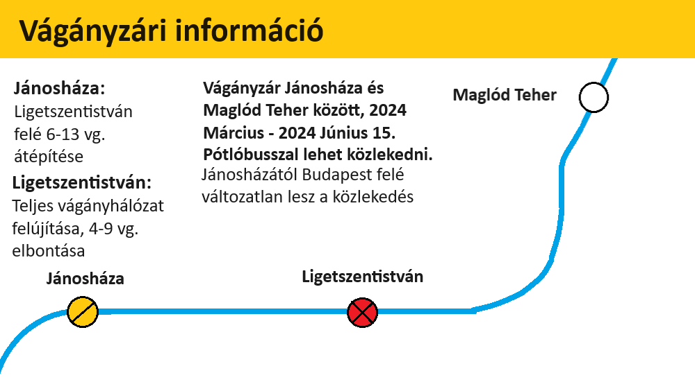
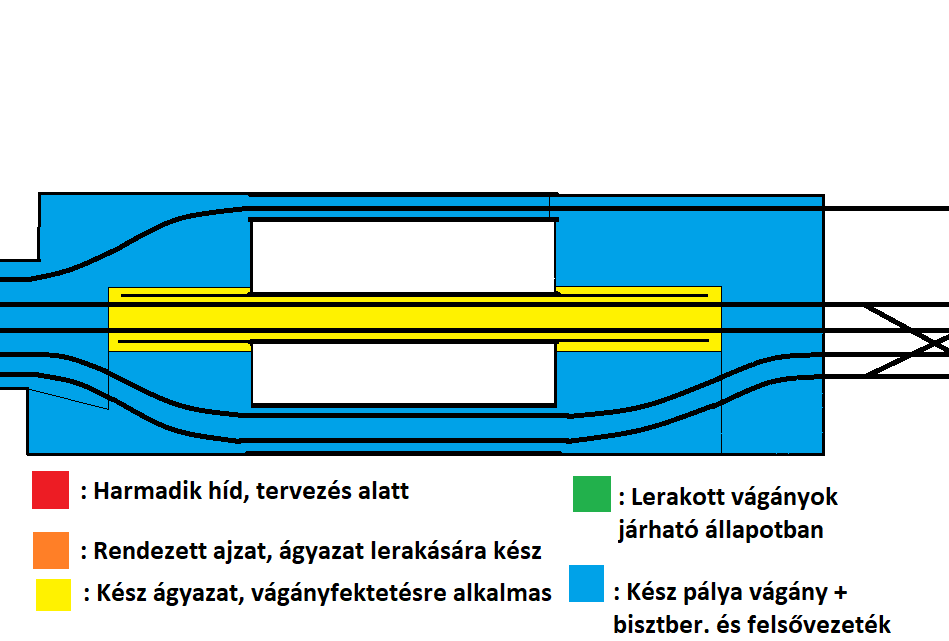
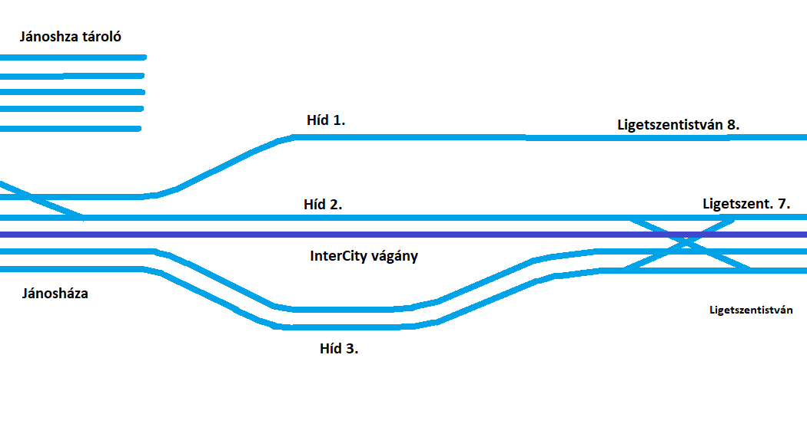
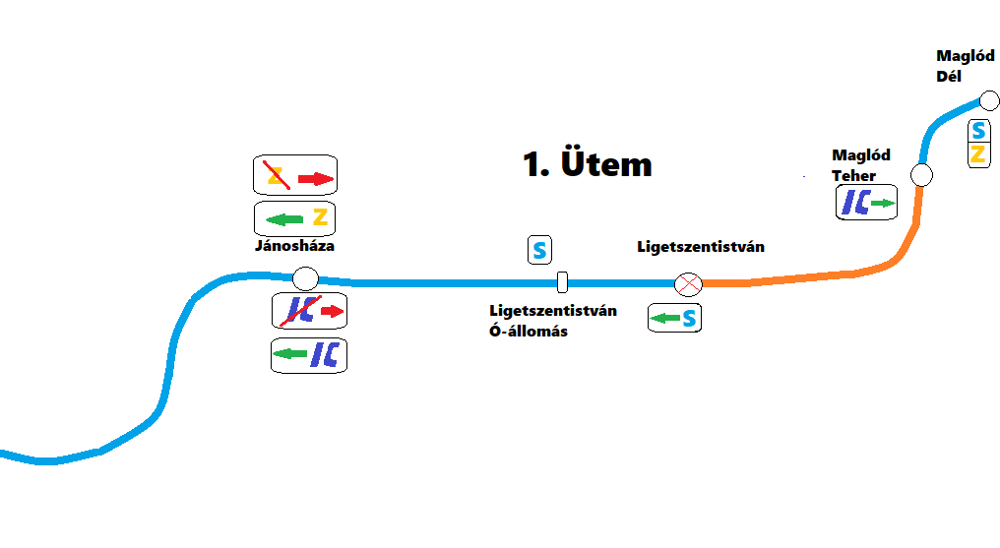
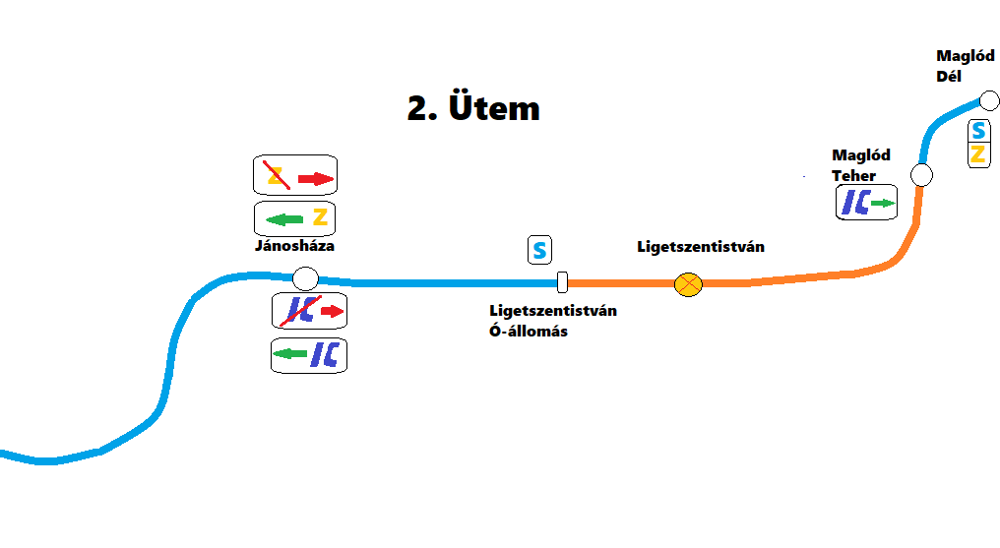
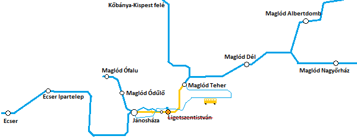

2024.02.10 Rövidült a sebességkorlázotás hossza
Átvizsgáltuk és helyreállítottuk az emlegetett 10 méteres szakasz nagy részét, visszaállítottuk az eredeti 100 km/h-ás sebességet. Megcsináltuk a páylát a kritikus szakaszon, illetve további szakasazokon is, így csak az átjárótól a felújított szakaszig maradt 80 km/h-ás sebességkorlátozás.
2024.02.04 Új éjszakai vonatok külföldre
A MÁV-val megegyezve aláírtuk a szerződést az ÖBB-vel, a DB-vel, a Trenitalia-val és az NTFS vasúttársaságokkal, hogy a H-EJLM is éjszakai vonatokat indít a szomszédos országok felé. Tervezetten egyenlőre napi egy pár vonat közlekedik majd oda-vissza. Tervezetten Róma, Salzburg, Hamburg és Lyon városokba utazhatnak majd el. Ehhez cégünknek be kell szereznie éjszakai EuroNight szerelvényeket. Az első közbeszerzési eljárás során 10 darab szerelvényt rendelünk meg. Melyek Június - Július környékén érkezhetnek meg, az első szerelvény akár Április végén.
2024.02.04 Új átfestések
Több szerelvényt / mozdonyt újramatricáztunk, többek között a G61 vonatok élén közlekedő 470-018 Taurus mozdonyt, a 465-001 Flirt160 motorvonatot, mellyel jellemzően az S64 vonatokon találkozhatnak, továbbá a 855-002 Kiss200 motorvonatot is átmatricáztuk, amellyel a Fenyő InterCity-n találkozhatnak.
2024.02.03 Bejelentés vágányzárról
Február 4. Vasárnap Jánosházán a váltókörzetnél pénteken átrostált ágyazat nem lett jó minőségű, ezért holnap fel kell újítani az adott szakaszt, amely a korábban bevezetett 60 km/h-ás lassújel legrosszabb állapotú szakasza. A vonatok csökkentett számban haladhatnak át a váltón amihez nem nyúlnak. A két fővágány nem, helyettük az IC-vágány és a tárolóhoz vezető vágányt használhatják a vonatok, ez torlódásokat, késéseket okozhat. A felújítandóü szakasz hossza kb 100 méter, megközelítőleg 3-4 óra alatt elkészülhetnek vele, a munka délelőtt 10 órakor kezdődik. A felújítás után csökken a 60-as lassú szakasz hossza, a maradék szakaszt a Március végére időzített teljeskörű felújítások kezdetekor kezdik.
2024.02.02 Új kedvezmények és bérletrendszer
Márciús 1-étől megváltozik a tarifarendszer a MÁV, a BKK és az EJLM-nél is. Budapesten elfogadják a Pest vármegye és sz országbérletet. A diákok a vármegyebérletet vehetik meg 945 Forintért a 3400 forintos Budapest bérlet helyett, amely teljes árban ezer forinttal lesz olcsóbb. A H-EJLM vonalain továbbra is elfogadják az országbérletet és a Pest vármegye bérletet. Továbbá új kedvezményeket és szolgáltatásokat hozunk be Márciustól; A vonatokon található prémium osztályú kocsikra kedvezményes bérletet vezetünk be mellyel a prémium osztályra egy havi időtartamra korlátlan utazást biztosít, helyjegy váltása nélkül vehető igénybe, ennek ára 3350 Ft. A vonatokon közlekedő étkezdő és bisztró kocsikba havi 4120 Ft-ért korlátlan fogyasztást bisztosítunk. E szolgáltatások Márciustól lépnek érvénybe.
2024.01.28 Újra járnak a vonatok
Megtalálták a zárlatot, egy kisebb elosztóközpont túterhelés miatt tönkrement, az érintett ezközt leválasztották a hálózatról és Vasárnap este visszakapcsolták a berendezéseket, így újra közlekedhetnek a vonatok. A menetrend Hétfő hajnalra helyreállhat, ugyanis a vonatoknak újra fel kell mennie a vonalra.
2024.01.28 Felújítások kezdése
Megvan a pontos dátum, hogy mikor kezdődnek el a felújítási munkálatok Ligetszentistván és Jánosháza területén. Az iskolai tavaszi szünet első napján azaz Március 28-án kezdődik a vágányzár.
2024.01.27 Baleset
Egy Maglód Teher felől Jánosházára közlekedő dízel vontatású szerelvény az autópályahíd után az erős szél miatt a pályára döntött faágaknak ütközött. A vonaton nem sérült meg senki, a mozdonyban kisebb anyagi kár keletkeett. Az utasokat a következő szerelvényre szállítják át, a helyszínelés és a fa eltávolítása idejére a vonatok a tároló vágányán kerülnek Jánosháza felé, míg Ligetszentistván felé a fővonal szabad vágányán.
2024.01.27 Frissítés
Szolgálatba helyeztük a dízelmozdonyokat, a tízből nyolc üzemképes, ezek a mozdonyok Jánosháza és Ligetszentistván illetve Maglód Teher között közlekednek, a zárlatot még nem sikerült megtalálni, feltételezhetően Vasárnap estére oldódhat meg a probléma.
2024.01.27 áramkimaradás
Ma hajnalban ismét lekapcsolta a fő áramellátóközpontot egy zárlat a rendszerben. Reggel 6 körül több kísérletet tettek a visszakapcsolásra, de mivel a zárlat továbbra is fennáll ezért lekapcsolták a teljes hálózatot a ligetszentistváni központi egységben, így Ligetszentistván és Jánosháza között bizonytalan ideig nem közlekednek a vonatok, pótlóbusszal lehet közlekedni.
2024.01.20 Új személyvonal
A megnövekedett forgalmi igény és felmérések alapján új személyvonatot indítunk Petőfitelepről Jánosházára a hajnali órákban félóránként, napközben 2 óránkét és a délutáni csúcsidőszakban óránként félórás késleltetéssel az IC között, így egyes megállókon állomásokon egy órás időköz helyett félórás időközönként fog vonat indulni. A vonat az S340 címet fogja viselni és feltehetően a tavaszi felújítások lezárulta után legoptimálisabb esetben a nyári főszezon kezdetétől kezdheti meg útját. A vonat útvonala a következő, minden állomáson és megállóhelyen megáll.: Petőfitelep - Klenovatelep - Gyömrői Elágazás - Maglód Főpályaudvar - Keleti Elágazás - Maglód Dél - Jánosháza útvonalon fog közlekedni.
2024.01.19 Havazás
Újabb havazás kewzdődött az ország nagy részén, alakulnak a késéesk. Maglód Teher és Maglód Falusi Temető között csak egy vágányon járnak a vonatok a megdőlt növényzet miatt. Ligetszentistvánon szintén a megdőlt nádas miatt rövid időre megállították a forgalmad, most a helyzetet gyorsan kezelték, de feltorlódtak a vonatok. A teljes hálózaton számítani lehet 5-10 perces késésekre.
2024.01.17 Sebességkorlátozás
A pálya romló állapota miatt Jánosháza állomás után Ligetszentistván felé 60, Jánosháza felé 80 km/h-ás sebességkorlátozást vezettek be. Megkezdték az előterjesztést és a forrás lekérést a szakasz felújítására amely a tavaszi felújítás idején valósulhat meg. Illetve a projekthez hozzáadták Jánosháza állomás másik irányában lévő 40 km-es sebességkorlátozású szakaszt ahol jelentősen leromlott a pálya állapota.
2024.01.07 Ligetszentistván átépítés koncepció
Egy új koncepció jött szóba Ligetszentistván állomás vágányzatának felújításában, mégpedig kaptunk egy javaslatot, hogy a tárolónál a fővonalat alakítsuk ki úgy hogy a vonatoknak ne 40-nel kelljen végig közlekednie. Ez egy teljesen elfogadható tervezet, elegendő forrás függvényében kivitelezhető lesz. Jelen állapotban az állomás utáni tárolónál van egy max 40 km/h-ás váltó mindkét vágányon, az azt követő ívek is 40 km/h-val járhatók a fővonalon. A megoldás az, hogy ezeket az íveket 80 km/h - ra alkalmassá építsük át, ez egy 80 km/h-ra alkalmas váltó beépítésére van szükség, amennyiben az megmarad és nem bontják el. Jelenleg két perc a menetidő Ligetszentistván és Maglód Teher között, de szűkösen, általában nem tudnak időben elindulni a vonatok. Tehát a felújítás után rugalmasabb lesz a közlekedés ezen szakaszon. Felmerült a kérdés hogy a Jánosházáról elindult vonatok menetrendje a felújítás után 2 ről 3 percre nőhet, mivel a Jánosháza bejárati jelzői kijjebb kell hogy kerüljenek az új váltókapcsolatok miatt. Összességébben amint a térséget érintő köomplex felújítások véget érnek, valúszínűsíthető, hogy módosítani kell a menetrendet több vonatnál is.
2024.01.03 Tájékoztatás menetrendről
2024 Február 1-én elkezdődik egy új megállóhely építése Maglód Patakpart és Keleti Elágazás között. Várhatóan Júliusra készülhet el a megálló, addig sebességkorlátozás lesz érvénybven a szakaszon.
2024.01.02 Vágányzári információ
2024 Márciusában felújítás kezdődik több állomáson is, emiatt vágányzár kerül bevezetésre Jánosháza és Maglód Teher között.

A vágányzár ideje alatt nem közlekedik az S63 személyvonat, az S61 vonatok Maglód Tehertől meghosszabbított útvonalon Klennovatelepig közlekednek a Petőfi InterCity helyett. Az S62 személyvonat a felújítás ideje alatti anyagszállítás miatt Jánosháza és Maglód Ófalu között közlekedik. Az S64 vonat Maglód Dél állomástól közlekednek. Az S65 személyvonat Falusi Temetőig közlekedik. A Kőbánya InterCity Maglód Tehertől közlekedik az S63 vonatok helyett. A Szolnok, Budapest felé induló InterCity, EuroCity vonatok Maglód MÁV vasútállomásról indulnak és oda érkeznek, Maglód Teher állomásról lehet átszállni. A Z61 zónázóvonat Jánosházaig közlekedik, a Jánosházáról Budapest felé közlekedő vonatoknál nincs változás. A vágányzár ideje alatti változott menetrendek itt elérhetők:
Menetrendek
2024.01.02 Fejlesztési tervek 2024
A H-EJLM 2024 re is eredményes évet vár. Több fejlesztés is meg fog valósulni idén:
Januárban több helyen pálya igazítást, helyreállítást végeznek, hogy növeljék a sebeséget ott ahol korlátozást kellett bevezetni a pálya állapota miatt, példa erre Jánosháza, ahol tavaly Decemberben 40 km/h sebességkorlátozást vezettek be Jánosháza állomáson Budapest irányába a peronok végétől kb 300 méteren a fővonalon. Több helyen végeznek pályakarbatartást is. Az évre bejelentett eddigi legnagyobb beruházás Jánosháza állomás vágányhálózatát, váltókörzeteit bővítjük, átépítjük. Ez vágányzárral fog járni és jelentős vonatszámcsökkentéssel, ugyanis a 6-13 vágányokat át kell építeni, ezzel egyidőben Ligetszentistvánon is átépítések lesznek. Az elöregedő, leépülő pályaudvar részt leválasztjuk a fővonalról majd később elbontjuk, illetve a fővonalról egy váltót is ki kell szedni, ezért teljes vágányzár lesz ez idő alatt. Továbbá Ligetszentistvánon felújítjuk az 1. és 2. vágányt tervezetten az állomás teljes területén, megújul a Ligetszentistváni tárolóvágányok is, illetve átdolgozásra kerül a fedett tároló megszüntetése is. Megújul az utastájékoztató rendszer és a peronokon is karbantartásokat fognak végezni. A beruházás várhatóan tavasszl készül, a határidő Június 15, a nyári főszezon kezdete.
2023.12.23 Havazás és káosz
Újabb havazás csapott le a térségre, az intenzív hóesés miatt a legtöbb vonalon a fókotró hiánya miatt lassabban közlekednek a vonatok. Jánosháza és Ligetszentistván között több helyen rádőlt a pályára a magas növényzet, emiatt nem lehetséges a közlekedés. Maglód Teher és Falusi Temető között csak egy vágányon közlekednek a vonatok szintén bedőlt növényzet miatt. A Jánosháza felé tartó Kőbánya InterCity a Budapest felé vezető oldalon közlekedik, tehát a 3. vágányra érkezik. Nem közlekednek az S63-as személyvonatok, az S65 személyvonat csak Falusi temető és Maglód Auchan között közlekedik. A problémára lehetséges megoldál nincs ugyani a terület természetvédelmű ezért nem lehet tenni ellene. A kezelő nem foglalkozik az üggyel, mert nem érdeke. Az EJLM jogi úton próbál megoldást találni a problémákba, de az hünapokig is eltarthat, a téli időszakból még 3 hónap van hátra. A közlekedés várhatóan holnap reggelre-délelőttre állhat helyre.
2023.12.11 Menetrendváltozás
A H-EJLM-ben jelenleg nem lesz nagyobb menetrendváltozás, viszont igazodik a külső menetrendhez. A Kőbánya InterCity December 12-től megáll a Repülőtér Főporta-ra átnevezett megállóban is. A menetrend Kőbánya-Kispest felé 2-3 perccel, Jánosháza felé 2 perccel hosszabbodik. A pontos menetrendek a menetrendek részen frissítettük.
2023.11.30 A H-EJLM elesett
Csütörtök délelőtt heves havazás kezdődött, rá pár órára ónos eső és havas eső kezdett esni több helyen megbénult a forgalom, jelenlegi időjárási adatok alapján reggelig esni fog, fagyással párosulva, így továbbra is bizonytalan a közlekedés. Sok helyen árvizek nehezítik a közlekedést, több állomáson nem működik a biztosítóberendezés és több vonalon nem lehetséges a közlekedés kidőlt növényeg miatt. Mivel ez az időjárás holnap délutánig is eltarthat, így előfordulhat hogoy addig nem sikerül helyreállítani a rendet. Kijelenthető, hogy a H-EJLM hálózata elesett.
2023.11.30 Heves időjárás
Frissítés: 16:00:
Több helyen nem működik a biztosítóberendezés, árvizek lassítják a vonatközlekedést, Maglód Falusi Temető és Maglód Teher között a felsővezetékre dőlt növények miatt nem lehetséges a közlekedés, Maglód Teher és Jánosháza között is szünetel a közlekedés.
Frissítés 14:45:
Jánosháza és Ligetszentistván között nem lehetséges a vonatközlekedés mert több helyen dőltek rá növények a felsővezetékre mind két oldalon, valamint a Ligetszentistván állomáson megállt vízben sem tudnak közlekedni a vonatok, így Maglód Teher és Jánosháza között pótlóbusz közlekedik. Maglód Teher és Maglód Falusi temető között csak egy vágányon közlekedhetnek a vonatok a belógó növények miatt, jtt Csak a Kőbánya IC közlekedik, az S63 nem, az S65 szeméylvonat csak Falusi temetőtől közlekedik.
Frissítés 13:00:
Az autópáléyahíd melletti nádas belóg a vasúti pályára ezért négyből csak egy vágány járható. Jelentős késések, járatkimaradások várhatók, többek közt az S62-es személyvonatok nem tudnak közlekedni. Ligetszentistván állomás területén a megállt vizek és talajalámosás miatt jelentős sebességkorlátozást vezettek be, emiatt még nagyobb késésekre kell számítani.-
Frissítés 11:30:
A havat ónos eső váltotta fel, a sok csapadék miatt Jánosháza és Ligetszentistván között sebességkorlátozást vezettek be a pálya menti magas nádas ledőlésének veszélye miatt, több helyen nagyobb víztömeg kezd kialakulni a pályán. Jelenleg általánosan 5-10 perces késésekre kell számítani. Az állomások csúszóssága miatt kérjük fokozottan figyeljenek, a peronok besózását, takarítását elkezdték. Budapesten is akadályok alakultak ki a havazás miatt, a Kőbánya InterCity vonatok késéssel közlekednek.
Erős havazás kezdődött nagy területen, előreláthatólag két órán keresztül. Egyenlőre nem befolyásolja a vonatközlekedést.
2023.11.11 Lassújelek, várható felújítás
Hamarosan vége a Ligetszentistván külvárosában a vasút melletti építkezésnek. Jelenleg 60-as lassújel van azon a szakaszon. Ligetszentistván állomás területén a pálya állapota igen leromlott, ezért több szakaszon is 40-es lassújel kerül bevezetésre. Ez csak kis mértékben befolyásolhatja a menetrendet. A pályaszakasz felújítására jelenleg nincs költségvetés, de valószínűsíthető, hogy a 2024 tavaszára tervezett Jánosháza állomás vágánykapcsolatainak bővítése és felújítása projekttel egy időben Ligetszentistvánon is felújítás lesz. Ez idő alatt várhatóan Ligetszetistvánon 1 hónapig, Jánosházán 3 hónapig lesznek korlátozások vagy vágányzár.
2023.10.19 Z62 Zónázóvonat
A 2023 Iskolakezdésre ígért Z62 Zónázóvonat (Maglód Auchan - Martinovics tér) járat elindítását engedélyeztetési gondok miatt halogatásra került, most elindítjuk. November 1-étől fog közlekedni óránként.
2023.10.18 Petőfi InterCity változás
November 1-jétől változik a Petőfi InterCity menetrendje. Maglód Keleti Elágazás megállón nem áll meg, helyette megáll Maglód Tempomkert megállón áll meg. A menetrend csak lokálisan változik: Klenovatelep felé a vonatok Maglód Főpályaudvarra óra 26 helyett egy perccel korábban indulnak. Maglód Templomkert-ről óra 28-kor indulnak. Jánosháuza felé Templomkert megállóról óra 08-kor indulnak. Maglód Főpályaudvarról egy perccel később óra 11-kor indulnak.
2023.09.29 Meghibásodott egy vonat Ferihegyen
Délután 18 óra után nem sokkal egy vonat meghibásodott Ferihegyen, az érintett szakaszon egy vágányon közlekednek a vonatok. Egy korábbi baleset miatt a menetrend nem állt még helyre ezért 20-40 perces késésekre, forduló késésekre kell számítani.
2023.09.29 Kőbányán baleset
Délután 14 óra körül baleset történt Kőbányán, a vonatok csak egy vágányon közlekedhetnek, 20-30 perces késésekre kell számítani.
A 14:40-kor elindult Kőbánya InterCity 20 perces késéssel közlekedik, Jánosházáról 15 perces késéssel fog indulni. Több forduló késésre is kell számolni.
2023.09.29 Baleset Vecsésnél
Frissítés 10:38
Befejezték a helyszínelést, a délelőtti órákban helyreállhat a menetrendi közlekedés.
Ma reggel 9 óra tájában baleset történt Vecsés térségénél, egy személyautóval ütközött egy vonat, a két kifelé vezető vágányból csak egyen közlekedhetnek a vonatok. Jellemzően 10-20 perces késésekre kell számítani.
2023.09.15 Baleset
Frissítés 16:42
a tehervonat Jánosháza bejárati jelzőjén túlhaladt, de az állomásra be tudnak menni a vonatok az 1. és második vágányról, hívójelzéssel 15 km/h sebességgel, Jánosháza tárolóról nem hajthatnak ki vonatok a forgalom elhaladása érdekében. A haladást tovább lassítja a Ligetszentistvánnál bevezetett lassújel a kimosott pályánál.
A jánosházai átjárónál fa dőlt a sínekre, egy arra közlekedő tehervonatot későn értesítettek így már vészfékezve de belement a fába, melynek egy nagyobb ágát az átjáróban álló gyalogosok felé lökte, egy ember súlyosan megsérült. A baleset miatt áll a forgalom, a helyszínelés idejére két vágányon szünetel a közlekedés
2023.09.14 Késések, talaj-alámosás
Firissítés 20:04;
Megindult a vonatközlekedés, ideiglenes 20 km/h sebességkorlátozást vezettek be a kimosott szakaszon, a pálya járható.
A Kőbánya InterCity vonatok Jánosháza felé jellemzően 15-30 perc késéssel közlekednek egy másik vonalon lévő építkezés miatt.
RENDKíVÜLI!
Újra kimosta a pályát az esőzés Ligetszentistvánon. Bozonytalan ideig nem közlekednek a vonatok Jánosháza és Ligetszentistván között. A vonalakon több helyen van fennakadás, nagy késésekre kell számolni. Jánosháza és Ligetszentistván között pótlóbuszok közlekednek, igénybe vehetik a Volánbusz járatait is, az esőzés és útfelújítás miatt nagyobb torlódásokra kell számítani az utakon is. A buszok menetideje is jelentősen megnőhet.
2023.09.03 Összeállítások
A jelenlegi vonatain összeállítása 80%-ban készen van, még négy forda összeállítását kell elkészíteni. Ezt követően a fejlesztési hagsúly a menetrendek elkészítése és frissítésén lesz.
2023.08.31 Iskolakezdés
Holnaptól elkezdődik az új tanév. A teljes hálózaton, de Budapest felé mégnagyobb utasszámemelkedés várható a csúcsidőszakokban. Szeptembertől elindul az S68 személyvonat Angyalligetet összeközve Maglód Főpályaudvarral, útnak indul az S69 személyvonat Martinovics tér és Gyömrő Petőfitelep között és útnak indul a G62 gyorsított személyvonat Maglód Fáy tanya és Budapest-Keleti között. A Petőfi InterCity útvonala meghosszabbodik Klenovatelepig, a menetrendeknél elérhető az állomási megállások változása. Az S67 személyvonat két óránként Maglód Ipari parkig közlekedik ahol a Kőbánya IC-re lehet átszállni.
2023.08.29 Továbbra is szünetel a forgalom
Frissítés Szerda:
Újraindult a vonatközlekedés szerda este, mostmár zavartalanul közlekednek a vonatok.
Késő estére megnyitják a pályát, már a lerakott vágányokat tesztelik.
Továbbra is szünetel a forgalom Jánosháza és Ligetszentistván között. A pályán már dolgoznak, 100 métert kell helyreállítani két vágányon, alapzat cserére is szükség van, így kibontják a teljes szerkezetet. Ma estére a munkagépek már dolgoztak és vágányokat felszedték. A pálya felújítására 2024-ben kerülhet sor. Most utánpótolják, visszerendezik az ajzatot, a betonaljakat és a vágányokat is visszeépítik. Várhatóan holnap az esti órákban újra közlekedhetnek majd a vonatok.
2023.08.29 Kimosta a pályát az eső
A Ligetszentistvánon korábban megsüllyedt pályaszakaszt a ma reggeli esőzés jobban kimosta, így nem közlekednek a vonatok. Jánosházára az S62 személyvonattal utazhatnak.
Bevezetett forgalmi változások:
Az S61 személyvonat Ligetszentistván és Jánosháza között nem közlekedik
A Z61 zónázóvonat Jánosháza és Maglód Dél között nem közlekedik
Az S63 személyvonat Maglód Tehertől, az S65 személyvonat Falusi Temetőtől közlekedik
Az S64 személyvonat Maglód Déltől közlekedik
A Petőfi IC Maglód Főpályaudvar és Klenovatelep között közlekedik
A Kálmán és a Fenyő InterCity-k Budapest irányába zavartalanul, Szolnok irányába Maglód Tehertől közlekednek.
A pályát várhatóan ma késő délutánra állítják helyre.
2023.08.28 Sebességkorlát
Ligetszentistván állomáson ideiglenesen 40 km/h-ás sebességkorlátozást vezettek be pályahiba miatt. A két vágány között a korábban megsüllyedt és helyrehozott pálya most ójra megsüllyedt, ezért csak lassan mehetnek rajta a vonatok. Tervezetten a következő egy két napban kijavítják
2023.08.21 Egy éves a H-EJLM
Ma egy éves a MÁV START-ból 2022 Augusztus 21-én kiváló cégcsoport a H-Ecser Jánosháza Ligetszentistván Maglód cégcsoport. A vonalak régen egészen 2013-ig a MÁV-hoz tartoztak, 2013-ban kivált és JL-START ként működött tovább. 2022 Áprilisában ismét egyesült a MÁV-val, ezt követően 2022 Augusztus 21-én létrejött a H-EJLM.
2023.08.20 Elkészült az új iskola
Augusztus 20-án átadásra kerül Maglód új általános iskolája. Az eddigi nevén Maglód KOI iskola megállóhelyet átnevezzük Maglód Vermesy Iskola névre.
2023.08.20 Ünnepi tűzijáték
Augusztus 20-án Vasárnap Maglódon az Auchan-nál tűzijátékot fognak fellőni. Jánosházától és Maglód Főpályaudvarról csatolt motorvonatokat fogunk indítani Maglód Auchan állomásra. Maglód város önkormányzata tájékoztatta a lakosságot, hogy fokozottan ügyeljenek állataikra, ugyanis ebben az időszakban megszaporodhatnak az állat szökések. Továbbá Ecseren, Jánosházán és Ligetszentistvánon is lesz tűzijáték, többféle rendezvényekkel, koncertekkel várják az odalátogatókat.
2023.08.16 Menetrend változás
2023 Szeptember elsejei menetrendváltáskor a Jánosházára óra 25-kor érkező S63 vonatok helyett a Petőfi IC érkezik, az S63 vonat pedig a Klenovatelep felől érkező Petőfi IC helyett óra 15-kor fog érkezni, ezt a cserét az IC vágány foglaltsága miatt kerül bevezetésre.
2023.08.16 További menetrend változások
A Petőfi InterCity vonalán lesznek változások: Szeptembertől Maglód Klenovatelep állomásig fog közlekedni, mely Maglód Kelet és Maglód Klenovatelep között mindenhol megáll majd, ez három megállást jelent. Hamarosan elkészül az autópályahíd 2. Hídja, azzal együtt befejeződik az IC vágány projekt kivitelezése. A Petőfi InterCity az új vágányon halad Jánosházától Maglód Dél-ig, nem fog megállni Maglód Teher állomáson és Maglód Templomkert megállóhelyen sem a menetrend még nem készült el, de várhatóan 2-4 perccel lesz rüvidebb menetidő Maglód Kelet-ig. Klenovatelep részen személyvonat fog közlekedni egy csomóponti állomástól, ahonnan a Petőfi IC-re, valamint az angyalligeti vasútra lehet átszállni, a Klenovatelep illetve a gyömrői Petőfi telepet járja majd be.
2023.08.10 Befejezték a felújítást
Befejeződütt Maglód Teher és Maglód Dél közötti vágány kiépítése és Maglód Dél állomáson a vágány felújítása. Ligetszentistvánnál az autópályahíd befejezésére várni kell, várhatóan Szeptembertől indulhat meg rajta a forgalom.
2023.07.24
Elkezdik az autópályahídon a 2. Híd építését, a vonatok 60 km/órás sebességkorlátozásnál haladhatnak, a hidat legkésőbb Augusztus 10-ig átadják a forgalomnak.
2023.07.21 Vágányzár Maglód Teher és Maglód Albertdomb illetve Nagyőrház között
Pályafelújítás miatt vágányzár lesz Maglód Teher és Maglód Albertdomb, illetve Nagyőrház között. Maglód Dél állomás területén zajlanak majd felújítások - váltócsere, nyomvonalkorrekció és új vágány építése. A vágányzár Július 25 és Augusztus 8 között lesz. Ez időben az alábbiakban változik a menetrend:
A Petőfi InterCity-k nem közlekednek
A Szolnok irányába közlekedő Fenyő és Kálmán InterCity-k Maglód Főpályaudvarról Maglódi nyaraló érintésével közlekednek.
A Z61 Zónázó vonatok Budapest-Keleti és Maglód Teher között közlekednek
Az S61 Személyvonatok Albertdomb és Maglód FP. között közlekednek
Az S64 Személyvonatok Nagyőrháztól indulnak
2023.07.18 IC Vágány kész - új ütem
Elkészült Ligetszentistván és Maglód Teher között az új vágány. A Ligetszentistván állomást elkerülő IC vonatok használhatják. A teljes felújítások utosó üteme következik, új vágány - az IC vágány folytatása épül Maglód Teher és Maglód Dél között, mivel Maglód Dél három vágányos állomás, ezért a nem használt vágányon fognak áthaladni az InterCity-k. A felújítás tartalmazza az állomás első, nem használt vágány felújítása, valamint a fővonal nyomvonalkorrekciója az állomás nyugati oldalán, valamint a keleti oldalon a 40-es váltó cserélése 80 km/h sebességre alkalmas váltóra. Ez a felújítás vágányzáérat igényel, ami várhatóan két hétig tart majd. Ezzel egyidőben elkezdik az autópályahíd 2. Hídjának építését, a munkálatok Július 25-én kezdődhetnek.
2023.07.12 Új vonalak!
A H-EJLM.Zrt ma szerződést írt alá melyben meglévő mellékvonalak kerülnek tulajdonába. Terv szerint egy meglévő villamosított vasútvonal Maglód Patak köz és Az épülő Iskola között, a vonal alternativája a Falusi Temető és UC Iskola közötti szakaszának. Tervezetten óránként fog vonat közlekedni, de ezt az utazási igények fogják meghatározni. Angyalliget kerülő néven egy kitérő vasütszakasz a fővonalból Maglód FP-Maglód Kőnyvtár-Angyalliget-Maglód Könyvtár-Maglód FP körvasúton is megindul a személyszállítás Szeptembertől. Az S67-es Személyvonat Maglód FP és Maglód Péküzemek közötti szakasza kiterjed Maglód Ipari Park-ig, ez egy leromlott állapotó pályaszakasz ide kétóránként fog közlekedni vonat, Ipari Parknál átszállási lehetőség van a Kőb-nya InterCity vonatokra. A Petőfi InterCity vonala meghosszabbodik Maglód Klenovatelep állomásig várhatóan szeptembertől. Maglód Martinovics tér és Maglód Újváros között fog óránként közlekedni vonat. Maglód Fáy Tanya és Budapest-Keleti között, Maglódi nyaraló-forduló érintésével fog közlekedni munkásvonat, a reggeli és délutáni órákban fél óránként, napközben és éjszaka két óránként. Ezeken a vonalakon felülvizsgálat alatt van a menetrend kialakítása. A vonalakon várhatóan Szeptembertől lehet utazni, a későbbiekben az utasforgalom növekedése befolyásolhatja a közlekedést.
2023.07.04 Vége a vágányzárnak!
Elkészült az autópályahíd vágányzata a 2. Híd kivételével. Újra közlekednrek a vonatok, vissza állt a menetrend. Az S62-es személyvonatok csak egy vágányon közlekednek.
2023.07.01 Mérföldkő
Frissítés Július 3.:
Megindulhatott a vonatforgalom egy vágányon az autópályahídon: A Z61-es zónázóvonatok Budapest-Keleti és Ligetszentistván óállomás között közlekednek. Jánosháza és Maglód teher illetve Ligetszentistván felső között holnap reggelig még pótlóbusz közlekedik, holnapra teljesen megnyitják az autópályahidat a 2. Híd kivételével, az Augusztus végéig készülhet el.
Frissités Július 2.:
Már lerakták a vágányokat az első vágányon, holnapra a felsővezeték és a biztosítóberendezés kiépítésével is végeznek, így egy vágányon közlekedehetnek a vonatok Ligetszentistván ó állomására. A fennakadások csökkentése
érdekében az S62 személyvonatok továbbra is Jánosházáig közlekednek, a Z61 vonatok fognak Ligetszentistván ó állomásra bemenni.
Az autópályahídnál lerakták az utolsó adag ágyazatot, így még ma elkezdik a vágányok lerakását, holnap a felsővezetéket és a biztosítóberendezést is kiépítik, így Kedden teljesen megindulnak a vonatok, visszaállnak a menetrendek.
Újabb mérföldkőhöz érkezett az autópályahíd felújítása. Az első vágány ágyazata, melyen az S62-vonat közlekedik készen van, holnap befelyezik az utolsó részeket a fővágányoknál is. Hétfőre járható lesz az 1. vágány, így az S62 személyvonatok közlekedni tudnak majd korlátozott számban. A második híd ki8vételével kedd-szerdára készül el a végleges pálya. A nyár folyamán még szánítani kell vágányzárra. Ligetszentistván állomás területén felújítják a pályát, ezt egy-két hét alatt fogják megtenni. Ezek mellett az harmadik IC-vágány építése is jó ütemben halad.
2023.06.28 Többfelé felújítások
Vecsés és Ecser térségében is pályafelújításokat végeznek. Ecsernél továbbra is zajlik a felújítás, a fővonal vágányai kész vannak egy kis szakasz kivételével, ahol elágazás és logisztikai épület épül. Itt a felújítás 2023 Szeptember végén ér véget. Vecsés térségében több helyen dolgoznak, mivel az a szakasz egy négy vágányú fővonal, ezért nincsenek nagyobb korlátozások. Ecser, Üllő irányában a kettőből csak egy vágány járható. A Kőbánya InterCity vonatoknál 10-15 perccel hoszabb menetidőkre kell számítani.
2023.06.28 Vágányzár
Megkezdődik az autópályahíd felújításának egy újabb szakasza, felújítják a maradt pályaszakaszt is. A 2. Híd építése Augusztus végéig befejeződik. A vágányzár várhatóan maximum egy hétig tart. Ez alatt a megszokott módon járnak a pótlóbuszok.
2023.06.16 Autópályahíd megnyitva
Ma reggel megnyitottuk az autópályahíd két vágányát ideiglenesen. A 4. és 5. vágányon közlekednek az InterCity vonatok. A távolsági IC-k Ligetszentistván állomáson is megállnak.
2023.06.14 Nyári menetrend 2023
A 2023-mas nyári menetrend az idei főzezonnal egyidőben Június 16-án kezdődik a H-EJLM vonalain. Idén egy nagy felújítási projekt miatt módosításokkal, de múködni fog majd. 2023-ban is expresszvonatok és különvonatok is közlekedni fognak a Balaton ésaki és déli partjára is. A szerelvényekhez több kocsit kapcsolunk, ez jellemzően másodosztályú kocsik lesznek. A már megérkezett Stadler Smile és Flirt200 motorvonatok is forgalomba állnak a csúcsidőszakban. Az expresszvonatok a Jánosháza és Maglód-Teher közti vágányzár idején Jánosházáról indulnak Maglód Főpályaudvar helyett.
2023.06.05 Autópályahíd
Frissítés Június 14.
Az 1. és 2. vágány kész szakaszán lerakták a vágányokat, már a biztosítóberendezés kiépítése zajlik. A 4. és 5. vágányait is lerakták, viszont egy 20 méteres szakasz hiányzik, mert elfogyott az anyag és csak Június 25. után hoznak újabb ágyazati kőzetet. Azon a kis szakaszon visszaépítik a régi vágányokat, ott 30 km/h-ás sebességkorlátozás lesz, így meg tudjuk nyitni a két vágányt Június 16-án és ezzek kezdetét veszi a főszezon és a nyári menetrend. A két vágányon tervezetten Július 10-ig csak az IC és EC vonatok fognak közlekedni. Ezekről valamint a nyári menetrendről egy másik cikkben fogunk beszámolni.
Frissítés Június 11.
A hosszas esőzésewk miatt 4 napos késéssel kezdték el az autópályahíd vágányainak ágyazat lerakását. A munkák befejeződnek Június 16-ig, de csak a vágányok alatt leszteljesen kész az ágyazat, a dekoráció anyagszállítás késése miatt Júliusra készülhet el. A Harmadik híd amelyen az IC-vágány lesz legkésőbb Július közepére készülhet el. Június 16-án megnyitják a pályát, az ötből három vágányon. Az eddigi közlekedés visszaáll, az S62 személyvonatoknál lesz korlátozás, amíg a Harmadik híd el nem készül. Az alábbi kép mutatja a munkálatok jelenlegi állapotát.
Június 05.
Fontos mérföldkőhöz érkezett az autópályahíd felújítása. A két szélső híd már a végleges helyén van, a középső hidat Július közepén adhatják át az IC vágány maradék szakaszával együtt.
Jelenleg a híd körül a vágányok ágyazata aléatti fedőréteget rakták le, így holnap a végső tereprendezés a vágányok körül és, szerdától
kezdik az ágyazat lerakását, Július 11--12 től elkezdiik a vágányfektetést, a felsővezeték rendszer és a biztosítóberendezés kiépítése is elkezdődik Csütörtökön+. A felújítás a végéhez közeledik, akár már 16-án Szombaton átadhatják.
2023.06.04 Építési állapotok
Az autópályahíd felújítása és az IC vágány kiépítése és felújítása projekt a végéhez közeledik. Tegnapi nap kezdték a terep végleges rendezését az autópályahídnál
A héten kezdik meg az ágyazat lerakását, a vágányfektetés és felsővezetékrendszer kiépítése az utolsó fázis lesz. Az IC vágány építése/felújítása is javában zajlik.
Jánosháuza és az autópályahíd között a vágányzár alatt teljes felsővezetékrendszer csere történik, a harmadik vágány felújítása jól halad
az alap megvan, az ágyazatot az autópályahídéval egyidőben terítik le. Ligetszentistván állomásnál már az ágyazat megvan, ott a vágányfektetés következik.
Az IC vágány Ligetszentistván és Maglód Teher bejárata közötti szakasz építése Július elejére készül el.
Ecsernél a Jysk előtti 750 méteres pálya mellett dolgoznak, továbbra is időszakos félpályás forgalom van érvényben. A teljes munkát Októberre adják át.
2023.05.28 Vágányzár hosszabbítás
Az autópályahíd munkálatainak elhúzódása miatt a vágányzárat meghosszabbítjuk Június 18-ig. A Júniustól kezdődő nyári menetrendet is érinti.
A balatoni és expresszvonatok Rákos, Kőbánya felső állomásokról indulnak majd.
2023.05.22 Pályamunka állapotok
Az autópályaídon jelenleg is zajlanak a munkák, a korlátelemeket építik be, a vágányépítés várhatóam Május legvégén kezdődik, a környező vágánykapcsolat kiépítése Ligetszentistván Ó-állomás felé befejeződött
Az InterCity vágány felújítása is folyamatban van, ez várhatóan Június végére fejeződik be teljesen.
Ecseren az ipari parknál lévő pályafelújítás is halad, jelenleg egyvágányon közlekednek a vonatok 500 méteren. Jelenleg a pálya mellett vízelvezetőrendszert építik,
a menetidő kis forgalomban 1-2 perc, csúcsidőben 3-5 perccel hosszabbodhat meg.
2023.05.10 TÁJÉKOZTATÁS Vágányzárról
Tisztelt utasaink! A H-EJLM vonalán végzett pálya és hídfelújítási munkálatok miatt Ligetszentistván és Jánosháza között érvényben lévő vágányzárat Május 31-ig. Később ez még változhat, addigis utasaink türelmét kérjük.
2023.05.08 STADLER Smile
Május 5-én Pénteken megérkezett a 10. és utolsó STADLER Smile InterCity motorvonat. Tervezetten a távolsági IC-ken találkozhatnak velük.
2023.05.03 Felújítások állapota
Autópályahíd felújítás

Frissítés Május 7:
Mivel a váltó munkák elkészültek, a vágányzár idején elkezdik az InterCity vágány helyének megtisztítását, régi vágány kibontását, a korábbi munkák miatt megújúl Jánosháza tárolója is.
Fontos változás lesz az autópályahíd felújításában. A fenti kép ábrázolja a végleges formát. A vágányzár meghosszabbításra került Május 10-ig. A későbbiekben
a vágányzárat akár Június végéig is meghosszabbíthatják. Hétfő óta van teljes vágányzár Maglód Teher és Jánosháza között, pótlóbuszok
közlekednek minden 5 percben. A legújabb terv szerint három híd lesz. Az első hídon a Ligetszentistván - Maglód Ófalu vonal egy vágánya lesz.
Középen egy új híd épül amin az új IC vágány és a S62- msáodik vágánya. A 3. Hídon a fővonal vágányai maradnak.
Váltók kiszedése
Frissítés Május 7:
Elkészültek a váltó építés/kibontási munkák, az IC vágány építésének kezdésével Maglód Teher váltókörzeténél is egy váltót kibővítenek, egészenm odáig fog húzódni a 3. vágány, ezért Maglód Teher és Ligetszentistván felső között csak egy váltón tudnak közlekedni a vonatok, ez járatszám csökkentéssel és több pótlóbusszal fog járni. Ezen váltó kibővítése két nap, a forgalomtól csak egy napot tart.
Jánosháza állomásnál a két emelt sebességű váltó már kész van, ma reggel befejezik a Ligetszentistván ó állomásnál levő váltó kiszedését és még ma elkezdik Ligetszentistván állomás fő vágányain lévő kereszt váltó kiszedését. Ez várhatóan Szombat hajnalra lesz kész.
Ecser Jysk Pályafelújítás
Már az új vágányok le vannak rakva, még nem a végleges formában ezért sebességkorlátozással közlekednek ott a vonatok. A teljes munka Szeptember végére lesz készen.
2023.05.02 Frissítés
Elkezdték az autópályahídnál levő építési munkákat. Az eddig meghatározott vágányzarat Május 10. Szerdáig meghosszabbítjuk ugyanis földmunkák miatt nem lehetséges a vonatközlekedés.
2023.04.24 Pályafelújítás - vágányzár
Frissítés - 04.30
A tervek szerint Péntek délután elkezdődött vágányzár jövő Szombatig tart majd ez alatt négy helyen dolgoznak. Jánosháza állomásnál már az új váltókat
építik be amit Hétfő reggelre befejeznek. Már Vasárnap délután elkezdik Ligetszentistván Ó-állomásánál lévő váltót kibontani, ezt Szerdán fejezik be. Ligetszentistván állomásnál két helyen is dolgoznak majd, ezt egyidőben kezdik Szerdán és Szombat hajnalra fejezik be, Szombaton várhatóan 6 órakor megnyitják a vasutat a forgalom előtt.
Amikor elkezdődnek az építési munkák a felújítás alatt álló vágány melletti közvetlen 30, a másik vágányon 80 km/órás sebességkorlátozás lesz a teljes szakaszon Jánosháza és Ligetszentistván
között. Az első ütemben a fővonalon cserélik / szedik fel a váltókat amik a felújításban érintettek. Ez jelenti a Jánosháza bejáratánál két 80 km/órás sebességre
alkalmas váltót, Ligetszentistván kijáratánál felszednek egy váltót, az állomás váltókörleténél egy váltót szednek ki. A peronoknál lévő kereszt váltót is ki fogják szedni
a jövőbeni feleslegessé válás miatt. Ezt teljes vágányzár alatt teszik majd meg várhatóan Május elején. Egy hétig lesz vágányzár Jánosháza és Ligetszentistván között, Az S62-vonatok menetrendszerűen fognak közlekedni,
az S65 és Kőbánya IC Falusi temetőig fog közlekedni, az S61 és S63 vonatok Ligetszentistván felsőről indulnak az S64 vonat Maglód Dél-ről indul. A távolsági IC-k helyett Budapest felé a Z61 vonatokkal
lehet eljutni, Szolnok felé Sülysápig pótlóbusz fog közlekedni.
A második ütem az autópályahíd töltésének megerősítése, az új híd és a 3. vágány kiépítése, felújítása Jánosháza és a Maglód Teher előtti váltókörlet között. Ez idő 1 hónapot vehet majd igénybe ez alatt a fentebb
említett sebességkorlátozások kerülnek bevezetésre. Jánosháza felé 2-3 perccel hosszabbodik meg a menetidő.
A harmadik ütemben a Ligetszentistván óállomás - Jánosháza szakaszt építik át a 3 vágány miatt. Ez is egy hónapot vehet majd igénybe, ez alatt az S62-vonatok Maglód Ófalu és Jánosháza között közlekednek.
2023.04.17 Pályafelújítás
Eldőlt melyik projektet kezdik el idén.
Az autópályahidat újítják fel Májustól Szeptemberig, már zajlanak az előkészületek. A jelenlegi állapotról képeket is készítettünk, a képek alatt a beruházás részletes tervezetét írjuk le.


Első lépésben megterveztük a beruházást. Fontos döntések előtt álltunk amikor az autópályahíd vagy
Ligetszentistván állomás vágányzatának felújítása készüljön el előbb. Az elsőt választottuk, el is kezdtük a tervezést.
1. Fázis:
Az új vágányok nyomvonalát kezdték kialakítani. Az autópályahíd lábánál terepfelmérést végeznek.
2. Fázis
Földmunkákat végeznek, befejezik a nyomvonal kialakítását, kiépítik az autópályahíd megerősített pillérjeit, valamint az új vágány hídpillérét. Felszedik a régi vágányokat, a 4 vágányt két ciklusban.
Cserélik a hidakat és beépítik az új hídelemet. A földmunkákat befejezik, kialakítják a végleges talajformát. Elkezdik az ágyazat és a sínek lerakását, kiépítik a biztosító berendezést és a felsővezetéket.
3. Fázis: Az új vágány egy az InterCity-k nek fenntartott vágány lesz amelyeket a Ligetszentistvánon áthaladó vonatok fognak használni. Ehhez át kell alakítani Ligetszentistván állomás vágányzatát és JHánosházáét is.
2023.04.05 Pályamunkák
Az autópályahíd 2. vágány töltésének újraépítését végzik Április 5-én és 6-án. Ez idő alatt az S62 személyvonatok nem, az S63, S64 vonatok Ligetszentistván felső állomásig közlekednek.
A hidat nagypéntekre tervezik újranyitni.
2023.04.03 Pályafelújítás - frissítés
Már zajlanak a munkák az ipari parknál, először a növényzetet irtják a pálya mellett, korlátozásokra még egy-két hétig nem kell számítani, az esetleges sebewsségkorlátozások miatt 1-2 parcet késhetnek a vonatok.
Maglód Falusi temető előtti elágazásnál Maglód Teher irányában kerítést újítanak fel, emiatt a nem sokkal arrébb levő 40 km/h-ás sebeségkorlátozást meghosszabbítják. Ez további 1 perc késést jelenthet.
2023.03.23 Pályafelújítás
2023 Március 20-tól megkezdik a felújítási munkálatokat a Colas Építő Zrt. a helyi Jysk ipari park területe mellett húzódó vasúti pályán mit egy 750 méteren. A beruházás
Júliusra készülhet el. A menetrendben egyenlőre nem lesz változás, kisebb késésekre kell majd számítani az egyvágányú közlekedés miatt.
2023.03.18 Menetrend hírek
Jelenlegi állás szerint a következők a híreink az online menetrendről:
Az S65 személyvonatoknál egy elírást kellett javítani Jánosháza, Ligetszentistván, Falusi temető állomásokál, a Falusi temető menetrend javítása még folyamatban.
Végleges menetrend Jánosháza, Ligetszentistván, Maglód Auchan állomásokon.
Készítés alatt áll Maglód Teher, Maglód Dél állomás menetrendje.
2023.03.18 Rongálás
Szombat hajnalban Ligetszentistván állomáson kihelyezett virágtartókat kiborítottak a sínekre és a peronra. Az esetet csak a 4 órakor kezdő forgalmista
vette észre, értesítették a hatóságot. Az állomás térfigyelő kamerája rögzítette
az esetet, a tettest elkapták. Hajnalban 5 percre leállították a forgalmat az eltakarításig.
2023.03.10
2023.02.23 Jánosháza menetrend kész
Elkészült Jánosháza menetrendje, már a menetrend kiválaszóban is a végleges verziót lehet elérni. A jövőben egyre több állomáson lesz elérhető menetrend
Statisztikáink alapján több mint 650 vonat érkezik és indul összesen Jánosházán.
2023.02.21 Menetrend változások
Az esti 47 IC-k egész nap két óránként fognak közlekedni Fenyő InterCity néven Lőkösháza illetve Veszprém felé a 6. vágányról
Az S63-mas személyvonatok Jánosházáról 5 perccel korábban indulnak a 13. vágányról és oda is érkeznek.
Megszűnik a vonategyesítés a délutáni Kőbánya IC-k nél, a fix menetrendben az IC óra 07 és 37-kor indul Falusi temetőről, a S63 személyvonat óra 10-kor indul.
Az InterCity késése esetén a személy megvárja az IC-t, ha még óra 10 előtt megérkezik, ellenkező esetben a személy indul előbb.
A 46-os InterCity-k a 7. vágányról fognak indulni minden óra 40 perckor, FONTOS, hogy a 7. vágányról két vonat fog egyszerre indulni, az egyik Szolnokra, a másik Székesfehérvárra fognak közlekedni.
A 43-as IC-k nél is így fogjuk megoldani, hogy a 8. vágányról Maglód Kelet felé, a másik irányba Kelenföldre fognak egyszerre indulni minden óra 10 perckor.
Az S65 személyvonatok Jánosházáról 20 perccel korábban óra 27/57-kor indulnak és óra 17/47-kor 3 perccel később érkeznek a 10. vágányra
2023.02.22 InterCity nevek+újítás
Új InterCity járatot vezetünk be Jánosháza és Lőkösháza között, ez a viszonylat rendes IC kocsikkal lesz kiadva. Az InterCity vonatokat elneveztük:
A 43' IC neve PETŐFI InterCity
A 46' IC neve KÁLMÁN InterCity
A 47' IC neve FENYŐ InterCity
A 48' IC neve NEMESVÁR InterCity
A 49' IC neve DUNA InterCity
A 40' EN neve HOLDFÉNY EuroNight
A 41' EC neve HOLDFÉNY EuroCity
2023.02.22 Menetrend
Már 90%-ban kész van Jánosháza menetrendje, bekerültek a 43-as IC-k, már csak a 46-os IC-k és az esti távolsági IC és EC vonatok hiányoznak.
2023.02.20 Megoldás a helyi InterCity forgalomra
Egy új ötlettel állunk elő a helyi IC szolgáltatások bővítésére. Jánosháza állomás már kimerült, nincs már kapacitás új vonatok hozzáadásához
, ezért egy új program keretében valósul ez meg. A felső vezetéssel eldöntöttük, hogy a helyi InterCity vonatok is motorvonatokból fognak állni.
Ennek célja, hogy egyszerre több viszonylatot tudjunk indítani egy vonatként. Az egésznek a lényege, hogy az IC 44, 45, 46 viszonylatokat egyesítjük, így a vonatok Szolnokig,
illetve Székesfehérvárig közlekednek tervezetten óránként. Ezek a vonatok viszont tényleg a gyors utazásra szolgálnak távolabbi úticélokra.
Az újításból a helyi 43-as viszonylatú vonatok sem maradnak ki, csak náluk kisebb mértékben. Ezek a vonatok kevesebb helyen állnak meg - tervezetten: Jánosháza, Maglód Teher, Keleti elágazás, Maglód Főpályaudvar, Templomkert és Maglód Kelet, és a megszokottan óránként közlekednek. A program összehangolásaként fél órás különbséggel indulnak az IC-k.
2023.02.20 Autópályahíd állapota
Jelenleg sikerült stabilizálni a híd állapotát, egy újabb támfal kerül kiépítésre Február 21-én Kedden. Kedd délelőtt le lesz zárva a híd 2. vágánya.
Árajánlatot kaptunk az autópályahíd rekonstrukciójára, amely magában foglal egy nagy beruházást. A Májusi kezdéssel tervezett pályafelújítás
Ligetszentistván állomáson mellett Július-Augusztus táján valósulna meg az autópályahíd teljes felújítása. Ez jelentené a teljes támfalak korszerű kiépítését,
a pálya felújítását is. Összegezve 2023 a felújítások éve lesz.
2023.02.18 Autópályahídi korlátozás
Vizsgálatok kimutatták, hogy a Jánosháza és Ligetszentistván közötti autópályahíd belső falának állapota egyre romlik. A vonatok sebesége miatt kialakuló
rezgés gyengíti és omlasztja a támfalat. A mai állapotfelmérés kimutatta, hogy a belső fal 85 százaléke veszélyes. Emiatt a két belső vágányon 40 km/h-ás
sebességkorlátozás van a hídon. Szóba került a két vágány lezárása, de erről később fog döntés születni.
2023.02.12 Nagy változások
2023 Március 1-étől alapjaiban változik meg a vonatközlekedés. Megvettük a MÁV vasúti kocsi színterv jogát, így a vasúti kocsik a MÁV színterveihez fognak igazodni.
A személy és zónázóvonatok az új motorvonatokkal fognak közlekedni, az InterCity vonatokra a nagy utasszám miatt az új ICMot InterCity motorvonat, 9 kocsiból és egy vezérlőből áll.
Legjobban a RailJetre hasonlít. Ezek a vonatszerelvények a távolsági vonatokon közlekednek mint a 44X, 45X, 46X, 47X, 48X vonatokon. Az este 8 után induló 47X, 48X, 49X,
50X távolsági InterCity és EuroCity vonatokon szintén 9 kocsi és egy vezérlő szállítja, de abból 4 háókocsi. Ennek célja az ütemesebb menetrend, ezáltal nem kell
a végállomáson mozdonyt cserélni vagy körbejárni, így a vonatok a vezérlővel fordulhatnak. Egyes vonatokon az új másodosztályú személykocsik vezérlővel közlekednek.
2023.02.11 Felsővezetékszakadás
Frissítés
11 órára helyreállították a felsővezetéket újra közlekednek a vonatok Rákoshegy és Budapest-Keleti között.
Előzmény
Szombat hajnalban Rákos állomáson egy tehervonat áramszedője letört és leszakította a felsővezetéket. Budapest-Keleti és Rákoshegy között nem közlekednek a vonatok.
Várhatóan délig tart a korlátozás
A H-EJLM vasótnál az alábbi változások vannak érvényben:
A G61-es vonatok nem közlekednek
A Z61-es vonatok Ecserig közlekednek és onnan indulnak
2023.02.09 Csőtörés
Frissítés:
17 órára helyreállították a csőtörést, újra közlekednek a vonatok.
Csütörtök délután csőtörés helyreállítás miatt Ligetszentistván és Maglód Teher között szünetel a vonatforgalom előreláthatólag este 18-19 óráig. Az InterCity-k
Maglód Délig közlekednek, Ligetszentistván felső állomásig közlekedik a Z61 és S61 es vonatok. Jánosháza felől csak az S61-es és Z61-es vonatok közlekednek
Ligetszentistvánig, az S62-es vonatok zavartalanul közlekednek.
2023.02.07 Vonatgázolás
Frissítés 18:21-kor
Befejeződött a helyszínelés zavartalanul közlekednek a vonatok, a rendőrök a helyszínen letartóztattak egy embert gyilkosság gyanújával, de az öngyilkosság sincs kizárva.
A vonat fedélzeti kamerájának felvételét bekérték, ahol kiderül mi is történt, értesülések szerint egy fiatal az áldozat.
Frissítés 17:00-kor
A tűzoltók kiérkezése után a két érintett vonatokról az utasokat leszállítják, pótlóbuszok viszik be Jánosházára.
Frissítésig az allábbi változások vannak érvényben:
A helyszínelés befejezéséig az alábbi vonatok nem közlekednek:
Nem közlekednek az S62, S63, S64, S65 személyvonatok, az érkező InterCity-k Ligetszentistván felsőig közlekednek.
A Z61-es vonaatok Jánosháza és Keleti Elágazás között minden állomáson megállnak.
Előzmény:
Vonatgázolás történt Jánosháza és Ligetszentistván között az autópályahíd után nem sokkal. Az érintett vonat a Jánosházára 16:44-kor érkező S65-ös vonat.
A balesetben a pont arra közlekedő S65-ös személyvonat is érintett, mivel a kettészakadt holttest eltalálta a vonatot.
A vonalon 4 ből csak 2 vágány járható, nagy késésekre, vonatkimaradásokra kell számítani.
2023.02.04 Szélvihar
Ma egész napra riasztás van kiadva viharos szélre. Ligetszentistván kijáratánál a szél dönti le a nádat a pályára, két vágány továbbra
sem használható, az S62-es vonatok továbbra is a fő állomást használják. A vonalon késésekre lehet számítani.
2023.02.03 Havazás - késések
Pénteken délben és délután hirtelen nagy mennyiségű csapadék hullott. A Maglód Teher-Maglőd Falusi Temető közötti szakaszon csak egy vágány
járható, a vonatok lassú sebességgel közlekednek, helyenként alámosás is kialakulhat.
Maglód Patakpart és Maglód Albertdomb közötti emelkedőn a vonatok a csúszós pálya miatt nem tudnak felmenni. Vonatpótló autóbusz közlekedik a két állomás között.
A Pályatakarításokig sok vonalon 5-30 perces késések várhatók.
Ligezstentistván kijáratánál a nád telep a nagy hótömeg miatt ledőlt a vasúti pályára két vágány nem használható,
az S62-es személyvonatok Ligetszentistván pályaudvaráig közlekednek.
2023.02.03 Szélvihar figyelmeztetés
Február 4-én Szombaton országszerte 70 km/h-ás feletti széllökések várhatók, kérjük fokozottan ügyeljenek a vágányok közelében
2023.01.29 Menetrend változások
Az új menetrendben az S64-es személyvonatok óra 47 perc helyett óra 49-kor indul, mert az S65-ős személyvonat óra 47-es indulásával ütközik.
Az új menetrendben beírt vonatok menetrendje valós, de nem végleges, változások még lehetnek
A Maglód Auchantól Jánosházáig közlekedő S65-ős személyvonatok 13 perccel későb közlekednek, óra 02 és óra 32 perckor indulnak.
2023.01.25 Menetrendváltás
2023 Február 1-étől változik a menetrend több vonalon. Az alábbi változások lesznek érvényesek:
A Budapest-Keleti-Jánosháza-Maglód Patakpart-Maglód Klet vonalon:
Az S61-es személyvonatok Jánosháza és Maglód Főpályaudvar között közlekednek.
A Z61-es Zónázóvonat Jánosházai indulása Budapest-Keleti ill. Maglód Kelet helyett Budapest-Keleti és Maglód Kelet között közlekedik Maglód Patakpart érintésével
A Maglód Dél - Keleti Elágazás közötti déli szakaszon új S64-es személyvonat Jánosháza és Maglód Martinovics tér köztt óránként fog közlekedni
Szintén új S66-os személyvonat kezdi meg szolgálatát Maglód Főpályaudvar és Falusi Temető között óránkénti gyakorisággal.
A 43-as InterCity járatok menetrendje csak annyiban változik, hogy a déli szakaszon közlekedik Nagyőrház érintésével. Tervezetten Ligetszentistvánon Maglód Teher,
Madách Köz, Maglód FP, Maglód Templom, Maglód Kelet állomásokon áll meg.
2023.01.23 Rongálás, késések
Vasárnap délután egy Maglód Főpályaudvarra közlekedő személyvonat lámpáját egy cigány származású ember baseball ütővel betörte. A vonat megállt, a gyanúsítottat
elkapták az állomás biztonsági őrei. A vonat tovább nem közlekedett, az utasok mentesítő járattal utazhattak tovább. A helyszínelés ideje alatt a 2. vágányra
érkező vonatok a 3. vagy 4. vágányra érkeznek.
2023.01.21 Pályakarbantartás
Január 22-én Vasárnap kisebb szakaszokon pályakarbantartást végeznek Jánosházánál. 14-17 óra között pótlóbusz óközlekedik Jánosháza és Ligetszentistván között.
2023.01.20 Pályafelújítás
2023 Tavaszán tervezetten Májusban elkezdődik Ligetszentistvánon az állomás teljes vágányzatának és ajzatának cseréje, valamint a szakaszon felsővezeték-és tartó
oszlopok cseréje. A beruházás tervezetten nyár végéig elkészül, az idő alatt módosul a menedtrend:
Maglód irányából Maglód-Dél állomásig közlekednek majd a személyvonatok, Maglód-Teher állomásig az InterCity-k. Jánosháza felől a beruházás első
szakaszában Ligetszentistvánig közlekednek a vonatok, a Jánosházáról induló InterCity-k nem közlekednek majd.
A szakaszon pótlóbusz fog közlekedni.
A tervezett beruházás
1. Ütem:

Ligetszentistván Maglód felőli bejáratától az állomás peronjáig bontás, teljes felújítás.
2. Ütem:

Az állomás peron szakasza (csak a fő vágányok).
3. Ütem
Az állomás Jánosháza felé lévő kijáratának ajzat javítása, tervezetten 2023 Július-Augusztus. Vonatforgalom csak Jánosházáig, az S62-es vonatok közlekednek csak.
2023.01.20 Havazás
A régóta tartó folyamatos csapadékot ma délután havazás követett ezért fennakadásokra kell számítani.
Ligetszentistván állomáson kimosta a talajt,
emiatt a vonatok a kerülővágányon közlekednek. A vonalon több helyen kimosta az eső a töltést, sok helyen sbességkorlátozások érvényesek.
2023.01.01 Újév
Boldog újévet kíván a H-EJLM Zrt.
2022.12.31 Mozdonygyártó nagyüzem
Mától teljes üzemben működik a Maglódi mozdony gyár. Egy év alatt kb 200 mozdonyt tudnak legyártani.
2022.12.30 Exkluzív kép
Fénykép készült az új STADLER elővárosi kocsi szállításáról, ilyen lesz, tervezetten 3 nap alatt gyártanak le
egyet belőle, az első kocsik 2023 Január 1-jétől a motorvonatokkal együtt forgalomba állnak.
2022.12.26 FLIRT200 és nyertes színterv
STADLER Flirt200 motorvonat
Mától beindul a STADLER Flirt200 InterCity motorvonatok gyártása. Ez a flotta 40 db szerelvényből fog állni.
A nyertes színterv a személykocsikra
2022.12.19 Az évtized legsúlyosabb vonatbalesete
December 19 émléknap lesz amikor a jánosházai vonatbaleset áldozataira emlékezünk. A H-EJLM állomásain fekete zászlót helyeztünk el. Most felsoroljuk
a vonatbalesetben sérülteket és elhunytakat.
A balesetben 46 könnyebb sérült, 39 súlyos sérült köztük jegyvizsgálóink is.
A balesetben elhunytakra emlékezünk most
Szabó Áron
Illés Árpád
Dobos Csenge
Borbély Beatrix
Végh Zsóka
Oláh Balázs
Kelemen Zoltán
Major Vince
Fazekas Attila
Farkas Kristóf
Balog Ádám
Fekete Evelin
Simon Adél
Farkas Botond
Gál Benedek
Nemes Kevin
Gulyás Vince
Kelemen Flóra
Vass Árpád
László Henriett
Gáspár Erzsébet
Frissítés 13:26-kor
Két vágányon már közlekednek a vonatok, elvontatták a két szerelvényt, fokozatosan csökkennek a késések. A baleseti helyszínelés befejeződött,
a műszaki mentés késő estig is eltarthat. A késések csökkentése érdekében az alábbi menetrendváltozások érvényesek:
Az összes InterCity vonat közlekedik
Az S61-es személyvonatok 20 percenként közlekednek Budapest-Keleti és Maglód Kelet között
A zónázóvonatok nem közlekednek
Az S62-es személyvonatok Maglód Ófalu és Jánosháza között közlekednek
Az S63-as személyvonatok Maglód Teher és Maglód Falusi temető között közlekednek.
Frissítés 12:51-kor
Egy vágányon újraindult a vonatforgalom, ahelyszínelés késő délután fejeződhet be. A vonalon 60-120 perces késések, vonatkimaradások várhatók.
Az autópályán továbbra is teljes útzár van érvényben.
Frissítés 12:18-kor
Rengeteg rendőr, mentő és tűzoltó lepte el az autópályahíd környékét halálos áldozatokról még nincs értesülésünk. A baleset idején egy Jánosháza
irányába közlekedő személyvonat vészfékezett szerencsére
elkerülte a balesetet. A szerelvényen többen elestek, köztük a vezető jegyvizsgáló aki súlyosan megsérült.
Egy Szintén Jáénosháza irányába közlekedő vonat is vészfékezett, ott nem sérült meg senki. A helyszínelés idejére mind a vasúton, mind az autópályán
teljes lezárás van érvényben.
Frissítés 11:35-kor
Vasárnap délelőtt 11 óra körül egy Ecser felől Maglód irányába közlekedő vonat mozdonyvezetője gyorsítás közben rosszul lett. A vonat folyamatosan
gyorsult és az autópályahíd előtti ívben kisiklott
a töltésen leszaladt és az autópályán keresztül a szemközti töltésen állt meg. Az autópályán tömegbaleset történt.
Rendkívüli hír! Kisiklott egy vonat Jánosháza és Ligetszentistván között az autópályahídnál, leállt a vonatközlekedés. Súlyos sérültek, akár halottak is lehetnek.
2022.12.05 Vonatépítő üzemek épülnek
Három új gyáregység épül külön vonattípusokra specializálva. A tervek szerint ezek 3 hónap alatt készülnek el. Mindhárom épület december végére készülnek el
Maglódon 2 és Ligetszentistvánon egy gyárcsarnok épül. Ennek célja az ój STADLER motorvonatok építésének felgyorsítása.
2022.12.03 Karbantartások Vasárnap
December 4-én karbantartás miatt lezárják az autópályahíd 1. és 2. vágányát. A karbantartásban a híd utáni töltésszerkezetet erősítik meg. Ez kb 2 órát vesz
majd igénybe. Továbbá a 3. vágányt a tároló területén karbantartják, így a pályaszakasz 80 km/h
sebességre alkalmas.
2022.11.20 Oldalfejlesztések
A régóta ígért teljes online állomás menetrendet készítjük, a főbb állomásokról. Új stílussal fognak rendelkezni: a szokott sárga alapon kék mnetrend táblát
felsővezetéálta az (egyenlőre) fehér alapon világos-sötétkék mintázató tábla lesz.
2022.11.13 Ój Stadler motorvonatok próbaüzeme
A November 9-én érkezett Stadler Flirt160 és Kiss160 motorvonatok próbaüzemben fognak közlekedni a Ligetszentistván - Maglód Ófalu vasútvonalon. Ezzel a még
forgalomban lévő dízelmozdonyos szerelvényeket leváltva.
2022.11.07 Gigaszerződés a STADLER-ral
Október 16-án egy gigaszerződést kötöttünk a STADLER vállalattal. 2024-ig a teljes vonatflotta a stadler által gyártott szerelvényekből fog állni. Már megkaptuk
az engedélyt a STADLER szerelvények hazai gyártásához,
amit az ecseri vasúti összeszerelő nagycsarnokban kezdünk el 2022 November 1-től.
Már konkrét tervek vannak a mennyiségekre, építeni fogunk 20 darab STADLER Smile nagysebességő InterCity motorvonatot, 30 darab STADLER Kiss 200 InterCity emeletes motorvonatot, 40 darab STADLER Flirt 200 motorvonatot,
50 darab első osztályó, 50 darab másodosztályú, 40 darab hálók, 20 darab étkező,
40 darab bisztró, 30 kerekpárszállító és 15 poggyászkocsit valamint 30 darab STADLER Euro 6000 - mozdonyt építünk 2023 végéig. jelenleg több mint 160 kocsi
közlekedik, ennek nagy része a MÁV-START tulajdona, az új kocsikkal kiváltjuk a MÁVos kocsikat és azokat visszaadjuk a MÁVnak.
2022.10.22 Vonategyesülés
A
Jánosháza-Maglód teher-Kőbánya-Kispest vasótvonalon a délutáni csúcsidei folyamatos késések miat
Hétfőtől egyesítve közlekedik a
Kőbánya InterCity és az
S63-as személyvonat
A változás az alábbi vonatoknál érvényes: Kőbánya-Kispestről
14:10, 14:40, 15:10, 15:40, 16:10, 16:40, 17:10, 17:40-kor indulú vonatok Maglód Falusi temetőtől egyesítve közlekednek a
14:40, 15:10, 15:40, 16:10, 16:40,
17:10, 17:40, 18:10-kor induló
S63-as
személyvonatokkal.
E vonatoknál új menetrend lesz érvényben:
|
Allomás
|
Érkezés
|
Indulás
|
|
Maglód Falusi temető
|
Óra 07/37
|
Óra 10/40
|
|
Maglód teher
|
Óra 19/49
|
Óra 20/50
|
|
Ligetszentistván
|
Óra 21/51
|
Óra 22/52
|
|
Jánosháza
|
Óra 23/53
|
|
2022.10.06 Menetrend változás
A Kőbánya InterCity járatok új menetrendet kapnak. Jelenleg a pálya állapota miatt 9 perc a menetidő Maglód Teher és Maglód Falusi temető között.
| Állomás | Érkezés | Indulás |
| Falusi Temető | Óra:06/36 | Óra:07/37 |
| Maglód Teher | Óra:16/46 | Óra:17/47 |
| Ligetszentistván | Óra:19/49 | Óra:20/50 |
| Jánosháza | Óra:21/51 | |
2022.10.15 Külföldi hálókocsi
Sikeresen zárult a közbeszerzés külföldi hálókocsikra. Köztük 1 osztrák, 1 német, 1 román és 1 horvát hálókocsi. A hétvégén érkeztek meg. Hétfőtől forgalomba is állnak a külfoldi EuroNight vonatokon.
2022.09.27 Vonatbaleset, áramkimaradás
Frissítés 19:00:
Helyreállították a felsővezetéket, a kidőlt faágat is eltávolították a vonatközlekedés újraindult, a menetrend késő estére állhat helyre.
Frissítés 17:30:
Ecser és Maglód Albertdomb között pótlóbuszokat indítottunk amik az állomások előtt állnak meg. A Jánosházára érkező és induló InterCity vonatok Maglód Albertdomb állomástól közlekednek, a személy és zónázóvonatok
Maglód Patakpart állomásról indulnak.
Rendkívüli:
Még kis sem értek a tüzoltók a baleset helyszínére elkezdett szakadni az eső, a leszakadt felsővezeték zárlatos lett, így áramkimaradás van az adott szakaszon a két fázishatár között, ami jelen esetben Jánosháza nyugati
fázishatár és Maglód Dél keleti fázishatár között van. E szakaszon szünetel a vonatközlekedés. A menetrend késő estére-reggelre állhat helyre.
Vonatbaleset történt Jánosháza rendező területén 16 óra 50 perckor. Egy nagy faág rádőlt a vasúti pályára, leszakítva 3 vágányon a felsővezetéket. A 16:50-kor Jánosházára érkező InterCity nem tudott időben megállni,
nekiment a faágnák. A balesetben senki nem sérült meg, a mozdonyban súlyos kár keletkezett. A kárérték meghaladja az 50 millió forintot.
2022.09.18 Vonatforgalmi megoldás
Meghoztuk a döntést a Ligetszentistvánnál történt baleset forgalmával kapcsolatban.
Jánosháza és Ligetszentistván között nem közlekednek az S61-es személyvonatok, helyettük bármely személy, zónázóvonattal utazhatnak. Így a vonatok két vágányon közlekedhetnek, kikerülve a használhatatlan vágányt.
A baleset érintette szakaszon felszedték a síneket, mára nem sikerült megszerezni a pályabontó gépet, várhatóan holnapra érkezhet meg.
2022.09.18 Szélvihar, áramkimaradás
Frissítés 13:35-kor
Visszajött az áram, megindulhattak a vonatok. A szerelvények helyzete alapján sok járat kimarad, tetemes késések várhatók az elkövetkező 4 órában. A menetrend késő estére állhat helyre. A tegnap történt baleset miatt 1 vágányon közlekedhetnek a vonatok.
Frissítés 11:58-kor
Még mindig nincs áram sehol, értesülések szerint 13 órakkor állíthatjak helyre az áramellátást.
A vonatpótló autóbuszok az állomások előtti parkolóbúl/buszmegállóból indulnak. A menetjegyeket és bérleteket elfogadják a Volánbusz járatain is Ecser és Maglód Kelet, Maglód Auchan között.
Vasárnap reggel megkezdték a megrongát pálya helyreállítását. A kisiklott mozdony 365 méteren kb. 1400 betonaljat, két váltót rongált meg. A helyreállítás 2 hetet is igénybe vehet.
.
Délelőtt 10:45-kor lekapcsolt
az áram Maglód, Ligetszentistván, Jánosháza területén, feltehetőleg egy kidőlt fa leszakÍtott egy vezetéket. Ebből kifolyólag a vasút központi áramellátása sem üzemel. Leálltak a vonatok, sehol nincs áram. Vonatpótló
autóbuszos közlekedés szervezése folyamatban van, az első pótlóbuszok várhatóan 12:30-tól tudnak indulni. Dízelmozdonyokkal húzzák be egy állomásra a nyílt pályán rekedt vonatokat. A H-EJLM teljes hálózatán bizonytalan ideig szünetel a vonatközlekedés.
2022.09.17 Vonatbaleset
Frissítés:
Befejezték a baleseti helyszínelést, most vontatják el a szerelvényt, a kisiklott mozdonyt később emelik ki, majd holnap kora reggel elkezdik a helyreállítást.
Frissítés: 16:40-kor:
A vonatforgalom szervezése folyamatban van, vonatpótló autóbuszra nincs szükség. A vonatok 1 vágányon haladhatnak.
Az alábbi forgalomváltozások érvényesek:
A baleset miatt a vonatok egy vágányon közlekedhetnek, emiatt a két szembe érkező vonat váltakozva haladhat át.
Minden InterCity vonat közlekedik késéssel, a személyvonatok nem közlekednek Jánosháza és Maglód Dél között, a Zúnázóvonatokkal lehet eljutni, átszállást biztosítanak a személyvonatra.
Előzmény:
Vonatbaleset történt Ligetszentistván külterületén. Egy kerülőúton közlekedő nemzetközi vonat mozdonya siklott ki Ligetszentistván és Jánoaháza között. A balesetben senki nem sérült meg, a helyreállítás több hétig is
eltarthat. Vonatkimaradások, valamint 60-90 perces késésekre is számítani kell a késő délutáni órákban.
A baleset miatt az alábbi változások vannak érvényben:
A 16:15-kor Maglód-Nyugatra induló
Z61-es zónázóvonat
5 perc késéssel közlekedik.
A 16:20-kor Maglód Auchanig közlekedő
S65-ös személyvonat
nem közlekedik.
A 16:25-kor Maglód Falusi temetőig közlekedő
S63-as személyvonat
nem közlekedik, helyette a 16:35-kor Kőbánya-Kispestre induló InterCityvel utazhatnak.
2022.09.15 Időjárás
Délután heves vihar csapott le Magyarországra. A heves esőzés miatt 5 óra után kicsivel le kellett állítani a vonatközlekedést a teljes EJLM vasúthálózatán. Várhatóan 6 óra után indulhat meg a vonatforgalom, 30-60
perces késésekre kell számítani. 6 óráig nem közlekedhetnek a vonatok: Az újrainduláskor az IC vonatok indulhatnak el, majd a zónázóvonatok indulhatnak amelyek minden állomáson megállnak.
2022.09.11 Vonatgázolás
Vasárnap reggel 9 óra tájékában Jánosházán a gyalogos átjárónál a 2. vágányon egy tehervonat elgázolt egy a piros jelzés ellenére áthaladó kiskorút. A táskája védte meg a haláltól, életveszélyes sérülésekkel
mentőhelikopterrel szállították kórházba. A tehervonat több mint 30 kocsiból állt és Jánosháza állomás mindkét oldalán blokkolta a váltókat, így a vonatok nem tudtak kihaladni. A baleset miatt csak az 1.
vágányon közlekedhetnek a vonatok. Ecser és Ligetszentisvánon tudták biztosítani a vonatok útjának keresztezését. A vonalon 50-60 perces késések, vonatkimaradásokra kell számítani.
2022.09.10 Pályaépítés
Épül a Ligetszentistván - Péküzemek - Gyömrő közötti vasútvonal. A beruházás 140 milliárd forintba kerül, 2023 tavaszára készülhet el.
2022.09.06 InterCity Járatsűrítés
A 43-mas Jánosháza - Maglód Kelet, Jánosháza - Kelenföld viszonylatú InterCity járat holnaptól óránként fog járni minden óra 28 perckor indul Maglód Kelet állomásra, valamint minden óra 29 perckor indul Kelenföld
állomásra. Az óra 45-50-kor induló 43-as InterCity vonat helyett a 46-os viszonylatú járat fog közlekedni.
2022.09.01 Szerelvény Bővítés
Szeptember elsejétől a reggeli és délutáni járatokon a szerelvényekhez, ahol lehet több kocsit kapcsolunk a zsúfoltság elkerülése érdekében. Forgalomba állítottuk két FLIRT3 motorvonatunkat amely csatolva közlekedik S61-es személyvonatként.
2022.08.30 Retró hétvége
A H-EJLM Vasútnál 2022 Szeptember 3-án és 4-én retró hétvége lesz! Régi kocsikkal, gözmozdonnyal lehet utazni több vonalon is. A retró hétvége menetrendjét itt lehet megtekinteni:
2022-es retró
hétvége menetrendjeA retró szerelvényekre 20%-os kedvezményes jegtgyel utazhatnak
2022.08.23 Fakivágás
Felhívjuk utasaink figyelmét, az állomásról fát elvinni tilos!
Frissítés 16:00-kor
Eltakarították a fát a peronról és a sínekről, mindkét irányban már megindult a vonatközlekedés, Az 1. vágány melletti peron hátsó részét továbbra is zárva tartják. Ligetszentistván állomáson a 3-7 vágányok továbbra sem használhatók.

FrissÍtés 24-én 11:20-kor
Kivágták a fát, megkezdődhet a takarítás ami akár holnapig is elhúzódhat. Utasaink türelmét kérjük!
Tájékoztatjuk tisztelt utasainkat, hogy 2022 Augusztus 24-én Szerdán kivágják Ligetszentistván óriás fáját. A fa életveszélyes állapota miatt kerül kivágásra. Jánosháza és Ligetszentisván között pótlóbuszok közlekednek
melyek A ligetszentistváni pályaudvar mellől indulnak. A fa kivágása és eltakarítása holnapig is eltarthat. Ligetszentistván első vágányának peronjának hátsó részét is lezárják. A személyvonatok Maglód Teher állomásról
indulnak, az InterCity-k Ligetszentisvánról. Megértésüket köszönjük.
Változás az S64 vonatoknál
Menetrendi zsúfoltság miatt a Szeptember 1-jétől Maglód Martinovics Térig közlekedő S64 személyvonat Jánosháza helyett Ligetszentistvánról indul.
2022.08.22 Fadőlés
Frissítés:
Megjavították a felsővezetéket, már mindkét vágányon kjözlekedhetnek a vonatok. A menetrend estére állhat helyre.
Frissítés:
11 órára eltávolították a kidőlt faágakat, de a felsővezeték helyreállítása késő délutánra készülhet el.
A baleset miatt mindkét irányban forgalomkorlátozás van érvényben. Az InterCity-k és Zónázóvonatok
közlekednek a két állomás között, a személyvonatok Jánosházáig és Ligetszentistvánig közlekednek.
Előzmény:
Hétfő reggel faágak szakadtak rá a felsővezetékre Ligetszentistván és Jánoaháza között. Az arra közlekedő személyvonat időben vészfékezett, így elkerülte a balesetet. A faág leszakította a felsővezetéket a két fővágányon,
a vonatok a 4., 5. vágányon kerülnek. Az eset miatt órás késésekre vonatkimaradásokra kell számítani.
2022.08.21 Kiválás
Bejelentjük a kiválást a H-START vasúti cégcsoportból és megalapítjuk a H-EJLM azaz Ecser Jánosháza Ligetszentistván Maglód cégcsoportot. A vasút továbbra is a MÁV-hoz fog tartozni, minden más a H-EJLM része lesz. A kiválás Augusztus 22-től érvényes.
2022.08.20 Heves esőzés
Jövő hét szerdáig heves zivatarok várhatók Magyarország nagy részén. A csapadék kimoshatja a vasúti töltést, a bizosítóberendezést is megrongálhatja. Az autópályahíd melletti nádast az eső súlya összedönti, rá a vasúti
pályára. Az elkövetkező napokban késésekrse kell számítani.
2022.08.20 Tüzijáték elmarad!
Tájékoztatjuk kedves utasainkat, hogy az Augusztus 20. ünnepi tüzijáték Maglódon, Ligetszentistvánon és Jánosházán is elmarad a rossz időjárás miatt megértésüket kérjük.
2022.08.17 Baleset
Szerdán délután egy kiskorút sodort el egy Jánosházáról induló InterCity. A sérültet korházba szállították, állapota stabil. A helyszínelés idején Jánosháza állomáson az 1. vágány nem járható.
2022.08.02 Almahullás
Augusztus elején már érik az alma. A fák az érett terméseket lehullajtják. A vasút mellett is vannak almafáink amik a pályára hullajtják az érett almát, ez veszélyes lehet a vonatközlekedésben. A balesetek elkerülése
érdekében az érintett szakaszon a vonatok 40 km/órás sebességgel haladhatnak. Ha a vonat nagy sebességgel zúz össze almákat az röngálhatja a vonat kerekeit, alvázát.
2022.07.26 Szigorítás átjárókban
A MÁV-START-tal és az ORFK-val megegyezve a vasúti átjárókban szabálytalan átkelések miatt szigorítjuk a büntetést. Már sok baleset következett be vasúti átjárókban mind autós mind gyalogos átkelőkben. MINDEN ESETBEN aki
szabálytalanul kel át a vasúton 50-100 ezer forintos bírságot kaphat. Kérünk mindenkit, hogy tartsák be a szabályokat.
2022.07.21 Tisztelt utasaink!
Tájékoztatjuk önöket, hogy a hőség miatt a sínek megolvadhatnak és eldeformálódhatnak. A balesetek elkerülése érdekében az egyenes pályaszakaszokon 61, a kanyarodó pályaszakaszokon 40 kilométerórás sebességkorlátozást vezetünk
be reggel 10 és este 8 óra között. Megértésüket kérjüik.
2022.07.20 Ligetszentistván vágány feloldás
Július 20-án felszabadították Ligetszentistván rendezőjében az 1. vágányon levő törmelékkupacot, így mindkét vágányon közlekedhetnek a vonatok.
2022.07.12 Ecser Ipartelepi vonatgyártó gigaüzem
2021 Október 19-én megnyílt Ecser Ipartelepen Magyarország legnagyobb mozdony-vasúti kocsi gyártó üzem, ahol több mint 5 kocsit tudnak legyártani egy nap, illetve egy mozdonyt/motorvonatot 1-2 nap legyártani. Számos országból
érkezik az import áru, az üzem sikeresnek mondható. Itt készülnek az új IC+ kocsik, a 416 sorozatú és 436 sorozató motorvonatok és mozdonyok.
2022.07.09 Baleset körülményei
2022.07.08 Vonatösszeállítások változása
Július 10-én átadásra kerül a felújÍtott és villamosított Jánosháza-Maglód Ófalu vonalszakasz. A dízel mozdonyokat korszerü villanymotorvonatok váltják le, már közbeszerzési pályázat indult elsősorban 5, majd további 5 50 üléses
kis motorvonat kerül megrendelésre. Szintén Július 10-től az InterCity járatok több kocsival közlekednek.
2022.07.05 Súlyos baleset
Délelőtt 10 óra tájékában egy tehervonat kisiklott Jánosháza állomás területén. A balesetben senki sem sérült meg, ma, holnap jelentős menetrendváltozás lép életbe.
Áll a vonatforgalom Jánosháza és Maglód Dél között. A feltorlódott vonatok nehezen tudnak átjutni, a pálya csak a Maglód Ófalu felé vezető irányban, Jánosházán az 1.a vágány felé járható.
A Z61-es zónázóvonatok nem közlekednek, helyettük az S61-es vonatok Ecser és Maglód Kelet között járnak. Az InterCity vonatok Ligetszentistvántól közlekednek, InterCity vonattal csak Ecsertől lehet utazni. A G61-es gyorsított
személyvonatok Ecsertől közlekednek. Az S62-es vonatok nem közlekednek, helyettük pótlóbusszal lehet utazni. Az S63-as vonatok Maglód Teher és Maglód Falusi Temető között közlekednek. A menetrend várhatóan holnap délelőttre
állhat helyre.
2022.06.24 Új útvonalak
Maglód önkörmányzata javaslatokat tett új szakasazokon való vonatközlekedtetésre:
Ezek között új vonal lenne az S64-es személyvonat, ami Jánosházától Maglód Főpályaudvaron át Maglód Martinovics térig közlekedne.
Illetve a Z63-mas zónázóvonat Maglód Auchan állomásig, és az S65-ös személyvonat Maglód Falusi Temető érintésével szintén Maglód Auchan állomásig. A terveket elfogadtuk és felterjesztettük a MÁV Zrt. igazgatósága felé
amit elfogadtak. Ezek az új járatok Július 1-étől forgalomba állhatnak.
2022.06.20 Pályaépítés
Már a biztosítóberendwzés rendszerét építik ki a Jánosháza - Maglód Ófalu vonalszakaszon. Számítások szerint a vasótvonal Július 10-re elkészülhet.
2022.06.17 Oldalfejlesztés
A korábban kiírt idő változik az Összeállítások menöpont elkészülésének. Várhatóan Június 30-án készülhet el a végleges állapot.
2022.06.17 Baleset, késések a 120a-n
Ma délután a Budapest-Keleti-ből 17:50-kor Sülysápra elindult S60-as személyvonat Rákoskert éls Ecser között elsodort egy embert. Az újszászi vonalon 40-60 perces késések várhatók. Budapest-Keleti és Maglód Főpályaudvar
között az alábbi változások vannak érvényben:
A 18:20-kor Jánosházáról Budapest Keleti pályaudvarra közlekedő 3328 Z61-es zónázóvonat a mai napon nem közlekedik.
A 18:30-kor Ecser felől érkező és 18:30 kor Maglód Főpályaudvarig közlekedő 3925 S61-es személyvonat Ecser Iparteleptől közlekedik.
A 18:34-kor Maglód Főpályaudvar felől érkező és 18:35-kor Ecserig közlekedő 3941 S61-es
személyvonat Ecser Ipartelepig közlekedik és onnan indul 18:57-kor Maglód Főpályaudvarra közlekedő 3928 S61-es vonatként.
A 18:50-kor Székesfehérvárig közlekedő 461-es InterCity vonat a mai napon nem közlekedik.
A 19:00-kor Budapest-Keleti pályaudvarig közlekedő 3312 G61-es Gyorsított személyvonat a mai napon nem közlekedik.
A 19:04-kor Maglód Főpályaudvar felől érkező és 19:05-kor Ecserig közlekedő 3961 S61-es személyvonat Ecser Ipartelepig közlekedik és onnan indul 19:27-kor Maglód Főpályaudvarra közlekedő 3932 S61-es vonatként.
A 19:20-kor Budapest-Keleti pályaudvarig közlekedő 3316 Z61-es Zónázóvonat a mai napon nem közlekedik.
A 19:34-kor Maglód Főpályaudvar felől érkező és 19:35-kor Ecserig közlekedő 3981 S61-es személyvonat Ecser Ipartelepig közlekedik és onnan indul 19:57-kor Maglód Főpályaudvarra közlekedő 3318 S61-es vonatként.
A 20:00-kor Budapest-Keleti pályaudvarra induló 3300 G61-es Gyorsított személyvonat a mai napon nem közlekedik.
A 20:04-kor Maglód Főpályaudvarról érkező és 20:05-kor Budapest-Keleti Pályaudvarig közlekedő 3301 S61-es személyvonat Ecser Ipartelepen várakozik amíg a baleseti helyszínelés véget nem ér. Budapest-Keletiről várhatóan 15-20
perces késéssel indul Maglód Főpályaudvarra 3302 S61-es szeméylvonatként.
2022.06.15 Pályafelújítás
Hamarosan az utolsó fázisához ér a Jánosháza-Maglód ófalu vonalszakasz felújítása. Már csak a felsővezetékrendszer és a biztosítóberendezés kiépítése maradt hátra. Várhatóan Július közepétől azon a szakaszon is motorvonatokkal közlekedhetnek.
2022.06.13 Változik oldalunk Összeállítások menüpontja!
2022 Június 15-től új módon tájékozódhatnak a vonatok összeállításáról. Az ősszeállítás vonatszám alapján lesz kiadva, az adott vonatról részletesebb információkat tudhatnak meg.
2022.06.12 Új kocsik
Gőzerővel készülnek az új IC+ kocsik. Már több mint 50 új kocsi forgalomba állt. Új járműépítő szupercsarnok épül Ecser iparterületére. Ott is kocsikat és új FIRT illetve KISS motorvonatokat is gyártanak majd. Az átadásra Június végén kerül sor. Az újítással a régi kocsik feleslegessé válnak, de még tartaléknak ideiglenesen a Máv Zrt. tulajdonában lesznek.
2022.06.09 Időjárás
Csütörtök délután heves esőzések miatt áll a vonatforgalom Ligetszentistván és Jánoaháza között. Az eső több helyen kimosta a töltést, faágakat szakított le. A helyreállításokik a vonatok nem közlekednek. Várhatóan 30-40 perces késésekre kell számítani. A késések csökkentése érdekében az S61-es személyvonatok Ligetszentistvánig közlekednek. A zónázóvonatok helyett is személyvonattal utazhatnak, az InterCity vonatok több kocsival közlekednek.
2022.06.03 IC+
A Maglód - Jánosháza - Ecser vonalszakaszon is bővül az IC+ kocsik száma. Mai nap forgalomba állt 4 másodosztályó kocsi, 4 első osztályú kocsi, egy vadonat új poggyászkocsi, és egy prémium bisztró kocsi. Az IC+ Család folyamatosan bővül, a jövőben egyre több IC+ Kocsival utazhatnak.
2022.06.02 Felújítás
Megkezdődőtt a teljeskörű felújÍtás a 121-es vonalon Jánosházánál. Időszakos korlátozásokra kell számítani.
2022.05.25 Menetrend változás
Csütörtöktől változik a Kőbánya InterCity-k menetrendje. Az egyre romló állapotú pályaszakasz Maglód-Teher és Falusi Temető között, valamint a pályafelújítások Vecsés térségében a menetrend változásához vezetett.
A menetrend az alábbiakban változik:
| Állomás | Érkezés | Indulás |
| Falusi Temető | Óra:10/40 | Óra:11/41 |
| Maglód-Teher | Óra:20/50 | Óra:21/51 |
| Ligetszentistván | Óra:23/53 | Óra:24/54 |
| Jánosháza | Óra:26/56 | ------------ |
2022.05.21 Baleset, sínre dőlt fa
Frissítés 18:42-kor:
Jánosháza és Ligetszentistván között újraindult a vonatforgalom, a menetrendszerű közlekedés késő estére állhat helyre.
A 18:51-kor Ligetszentistváról indult S63-as személyvonat előtt a Ligetszentistván régi pályaudvaránál levő rózsakapu egy része kihajlott a vonat elé. A rózs visszahelyezéséig a szerelvény várni kényszerül és 10 perces késéssel indulhat tovább.
Frissítés 17:57-kor:
Újabb fadőlés történt. Jánosháza és Ligetszentistván között egty fa rádőlt a vasúti pályára és 3 vágányon leszakította a felsővezetéket majd az épp arra haladó vonat nem tudott időben megállni ezért belement a kidőlt fába. Személyi sérülés nem történt. A kidőlt fa miatt előreláthatóan este 7 óráig szünetel a vonatközlekedés. A MÁV pótlóbuszokat indít, a baleset miatt az alábbi menetrendváltozások lépnek életbe:
Az S61-es személyvonatok Ecser és Jánosháza között, valamint Ligetszentistván és Maglód Főpályaudvar között közlekednek.
Az S62-es személyvonatok Jánosháza és Maglód ófalu között közlekednek
Az S63-as személyvonatok Ligetszentistván és Maglód Falusi Temető között közlekednek
A Z61-es zónázóvonatok Budapest-Keleti felé a teljes útvonalon közlekednek, Maglód Kelet felé csak Ligetszentistvántól közlekednek
Az InterCity vonatok Ligetszentistvántól közlekednek, a Budapest felé közlekedő vonatok a teljes útvonalon járnak
A G61-es gyorsíott személyvonatok is a teljes útvonalon járnak
Frissítés 17:23-kor:
Baleset történt a Jánosházai vonattároló közelében egy faág rádőlt egy ott dolgozó munkásra aki könnyebb sérüléseket szemvedett. A helyszínelés befejezéséig az S62-es személyvonatok terelve a fővonalon közlekednek. Ez a vonatforgalmat nem befolyásolja.
Frissítés 14:02-kor:
Eltávolították a kidőlt fát és a felsővezetékewt is megjavították, így már két vágányon halad a forgalom. A menetrend várhatóan késő délutánra áll helyre.
Ma délután a Ligetszentistvánról 13:33-kor indult Személyvonat előtt rádőlt egy fa a felsővezetékre, az egy helyen leszakadt. A szerelvényről átszállítják az utasokat. A fa eltávolítása valamint a felsővezeték megjhavításáig a vonatok egy vágányon haladhatnak.
2022.05.20 BiztosÍtóberendezési hiba
Május 20-án Pétek délután Maglód állomáson biztosítóberendezési hiba miatt 50-60 perces késések várhatók az Újszászi vonalon. Az S61-es személyvonatok Maglód Főpályaudvarról csak Jánosházáig ozlekednek, valamint onnan indulnak. Maglód-Teher állomáson az InterCity vonatokon kívül az ott elhaladó vonatok csatlakozást biztosítanak az újszászi vonal szerelvényeihez.
2022.05.18 Pályafelújítás
2022 Június 1-től részleges, Június 10-től teljes palyafelújítás kezdődik Jánosháza és ligetszentistván között.
Ez idők alatt jelentős menetrendváltozás lesz érvényben.
2022.05.17 Baleset
Kedden késő délután gázolás történt Jánosháza közelében. Emiatt 5-10 perces késésekre kell számítani.
2022.05.16 Növényirtás
Május 16-án Hétfőn növényzet irtása miatt korlátozásokra kell számítani.
2022.05.12 Drágulás
A háború miatt jelentősen drágultak az energiaárak. A MÁV-START.Zrt 5%-os jegyár drágulást jelentett be.
2022.05.09 Növényirtás
Május 9-én Hétfőn növényirtás miatt korlátozásokra kell számítani.
2022.05.02 Növényirtás-felújítás
Hétfőn reggeltől késő délutánig irtják a növényzetet, ezért az érintett szakaszon 40 km/h-sebességkorlátozás lesz érvényben. Jánosháza állomáson az 1. illetve 2. vágányon felújítást végeznek, ezért az érintett szakaszon nem közlekednek vonatok. Helyettük más vágányokra érkeznek az adott vonatok.
2022.04.30 Teljes átállás
Május elsejétől a JL-START teljesen megszűnik és beolvad a MÁV START.Zrt-be. Holnaptól a vonatok neve-száma megváltozik.
2022.04.30 Mozdony Beszerzés
A beolvadó JL-START új Vectron mozdonyokat, korszerű Flirt3 és Kiss motorvonatokat vásárolt, valamint megérkeztek és forgalomba álltak a korábban rendelt WRBpee bisztrókocsik is amik az IC 43X, a 44X és 45X vonatokon találhatók. A 15 kocsiból 10 már forgalomban van.
2022.04.26 Biztosítóberendezési hiba
Szerda este Köbánya felső állomásnál kábellopás miatt Csütörtökre virradóan meghibásodott a biztosítóberendezés. A 120a vonalon jelentős késésekre kell számítani. Csütörtökön a Jánosházáról induló G40-es Gyorsított személyvonatok csak Ecserig közlekednek, az óra 30-as S40-es személyvonatok Jánosházáig közlekednek.
2022.04.21 Súlyos baleset
Április 21-én délután Jánosháza állomáson egy peronon levő lámpaoszlop rádőlt a vasúti pálya 1. ill. 2. vágányára. A balesetkor két szerelvény: egy tehervonat, valamint egy gyorsvonat haladt Ecser irányába. A tehervonat vezetője csak a kanyar előtt vette észre a sínre dőlt oszlopot, vészfékezett, de már késő volt. A tehervonat mozdonya és összes kocsija kisiklott. Személyi sérülés is történt, a Jánosháza állomás melletti vonattároló teljesen megsemmisült, a kisikló vagonok kidöntötték a felsővezetéktartó oszlopokat és leszakították a felsővezetéket. A kár nagyságrendileg a fél milliárd forintot is meghaladja.
A baleset idején Jánosháza és Ligetszentistván között szünetel a vonatforgalom. Várhatóan késő délután egy vágányt nyitnak majd meg.
A baleset miatt az alábbi válozások érvényesek:
Frissítés: 18:30
Egy vágányon megindulhatott a forgalom, a menetrend késő estére állhat helyre. Addig is 10-20 perces késésekre kell számítani.
A 17:00-kor Maglód-FP-ra induló S40-es vonat nem közlekedik
a 17:05-kor Ecserre induló S40-es vonat csak Jánosházáig közlekedik
a 17:20-kor Budapest-Keletibe induló Z40-es vonat nem közlekedik
a 17:30-kor Maglód-FP-ra induló S40-es vonat Jánosházáról indul, Ecser és Jánosháza között nem közlekedik
a 17:35-kor Ecserre induló S40-es vonat csak Jánosházáig közlekedik
a 17:50-kor Martonvásárra induló IC 445-vonat nem közlekedik
a 18:00-kor Maglód-FP-ra induló S40-es vonat Jánosházáról indul
a 18:05-kor Ecserre induló S40-es vonat Jánosházáig közlekedik
a 18:20-kor Budapest-Keletibe induló Z40-es vonat nem közlekedik
2022.04.14 Rendkívüli
A JL-START.Zrt vezérigazgatója bejelentette a csatlakozást:
Péntektől megszűnik a JL.START.Zrt, csatlakozik a MÁV-START.Zrt-hez. Ez azt jelenti, hogy péntektől a MÁV-START járatai közlekednek, a Máv színterveihez igazodnak a szerelvények, a szerelvények száma megváltozik, átveszi a 60-as jelzéseket, esetenként a vasútvonalak száma is megváltozik. Ez menetrendi változást is eredményezhet. Köszönjük a velünk utazóknak, hogy minket választottak.
2022.04.11 Baleset
Hétfő reggel Rákosnál gázolás történt. A 120a vasótvonalon 20-40 perces késésekre kell számitani. Az S40-es személyvonatok esetenként 5 perces késéssel közlekednek.
2022.03.24 Pályakarbantartás
Jánosházán időszakos karbantartásokat végeznek. Emiatt több alkalommal egy-két órára lezárják az első két vágányt.
2022.03.19 Baleset
Március 19-án reggel gázolás miatt késések, vonatkimaradások lesznek. A baleset miatt 7 és 8 óra között az S40-es személyvonatok nem közlekednek. A Z40-es zónázóvonatok késéssel közlekednek.
2022.03.15 Átépítés-favágás
Március 15-án Jánosháza és Ligetszentistván között pályamunkákat végeznek. A munkálatok idején fákat vágnak ki, illetve csatorna rendszert építenek ki. Az érintett szakaszon mindkét irányban 30 km/h-ás sebességkorlátozás lép életbe. 12 és 16 óra között a vonatok nem közlekednek, helyettük 10 percenként vonatpótló autóbusz szállítja az utasokat. 16 órától már menetrendszerint közlekednek a vonatok. Az S41-es személyvonatok a fővonalon közlekednek, illetve Jánosháza rendezőpályaudvara a héten csak Ligetszentistván felől érhető el.
2022.03.16 Baleset
Szerda délután egy S42-es személyvonat sínre helyezett betondarabokra futott. A balesetben senki nem sérült meg. Az érintett szakaszon egy vágányon közlekednek a vonatok emiatt 15-20 perces késésekre kell számítani. A 14:37 kor Maglód falusi temető felől indulé Kőbánya InterCity 20 perces késéssel érkezik Jánosházára.
2022.03.07 Forgalmi változások
Az autópályahíd 2. vágánya melletti töltés elkészült, így azt átadták a forgalomnak. A szakaszon 60 km/h a maximális sebesség. A szakaszt tehervonatok is használhatják és az S41-es személyvonatok forgalma zavartalanná válik.
Az autópályahíd 3. és 4. vágányán is megszűnt a korlátozás, mindkét vágányon 80 km/h a amximális sebesség.
2022.03.01 Menekültek
Jánosházára is érkeznek menekültek Ukrajnából. A JL-START Jánosházán és Ligetszentistvánon is felállít segély pontokat.
2022.02.25 Pályafelújítás
Február 26-án Szombaton Több helyen is pályafelújítást végeznek. Emiatt Szombat délután nem közlekedhetnek a vonatok a két fővágányon Jánosháza és Ligetszentistván-Autópályahíd között. A felújítások során megszűnik Jánosháza bejáratánál a 80 km/h-ás sebességkorlátozás, valamint az autópályahíd harmadik és negyedik vágányán 60 km/h-ás sebességkorlátozás van életben.
2022.02.25 Sebességkorlátozások:
Ahogyan Január 15-én megírtuk úgy teszünk most is. A 121-es vasútvonal idősödik és egyre romlik az állapota. Ezeket az új sebességkorlátozásokat vezettük be:
Jánosháza és maglód újfalu között szakaszonként 30 km/h sebességkorlátozás, eredeti a 80km/h.
Az autópályahíd felett az első vágányon 40 km/h sebességkorlátozás.
Az autópályahíd felett a második vágányon vágányzár van életben.
Az autópályahíd felett a harmadik vágányon 40 km/h sebességkorlátozás
Az autópályahíd felett a negyedik vágányon 60 km/h sebességkorlátozás
Jánosháza-Rendező és Jánosháza bejárata között egyes szakaszokon 80 km/h sebességkorlátozás.
Jánosházán a korábbi 60-20-40 helyett egységesen 80 km/h sebességkorlátozás.
2022.02.24 Súlyos baleset
Frissítés 18:35 kor.
Elvontatták a kisiklott mozdonyt és teherkocsikat, fokozatosan újraindul a menetrendszerinti közlekedés. A vonatok nem használhatják Jánosházán a 2. vágányt, valamint Jánosháza és Ligetszentistván között a fővágányokat és a harmadik vágányt sem használhatják, viszont Jánosháza-Rendező után már járható a jobb fővonali vágány valamint a harmadik vágány illetve a 124-es vasútvonal vágányán is közlekedhetnek vonatokl.
Ma délután vonatbaleset történt Jánosháza és Ligetszentistván között. kb. fél öt után egy sínekre helyezett farönk miatt történt baleset. Egy tehervonat siklott ki, személyi sérülés nem történt. A tehervonat vezetőjét figyelmeztették, de már nem tudott időben megállni. A tehervonat mozdonya, vaalamint 6 kocsija kisiklott a pályát és a felsővezetéket megrongálva három vágányt is elfoglalt. A műszaki mentés estig eltarthat, viszont a pálya hosszabb szakaszon megrongálódott ezért holnap reggel-délelőtt is dolgozni fognak a szakemberek a pálya helyreállításán. A baleset miatt 17 óráig szünetel a forgalom Jánosháza és Ligetszentistván között. Emiatt sok vonat kimarad a menetrendből, valamint 15-20 perces késésekre kell számítani.
A baleset miatt az alábbi vonatok nem közlekednek:
A 16:30 kor Ecserről Maglód-FP ig közlekedő S40 es személyvonat csak Jánosházáig közlekedett, a 16:35 kor Maglód-FP től Ecserig közlekedő S40 es személyvonat csak Ligetszentistvánig közlekedett, a 16:45 kor Jánosházától Maglód-K ig közlekedő InterCity nem közlekedik, a 16:50 kor Jánosházáról Kelenföldre közlekedő InterCity nem közlekedik, a 16:55 kor Maglód-Ófalutól Ligetszentistvánig közlekedő S41-es személyvonat nem közlekedik, a 17:10 kor Maglód-Ófalutól Ligetszentistvánig közlekedő S41 es személyvonat nem közlekedik. 17 órától fokozatosan újraindul a vonatforgalom. A vonatok csak az 1.a vágányon közlekedhetnek kerülő útvonalon. Minden 10 percben fog indulni vonat. Kérjük legyenek türelmesek. Megértésüket köszönjük.
2022.02.24 Háború Ukrajnában
Ma hajnal 4 órakor Oroszország megtámadta Ukrajnát. Bombázások, lövöldözések várhatók ukrajna teljes területén. Az Oroszok elfoglalták Csernobilt is. Valószínűleg Kijev a cél. Kérünk mindenkit, hogy őrizzék meg a nyugalmukat, Magyarországot még nem érinti a háború.
2022.02.22 Bejelentés
Keddtől a JL-START átáll a MÁV-START Zrt. felújított Caf Amz kocsik színtervéhez. Keddtől elkezdik az összes kocsit ehhez a színtervhez igazítani és az újonnan rendelt koccsik már ezt a színtervet kapják.
2022.02.21 Pálya állapotok
Tapasztalatok alapján egyre romlik a 121-es vasútvonal Jánosháza és Ligetszentistván között. Főleg az autópályahíd szakasazán romlott a pálya, valamint Jánosháza bejáratánál egyes szakaszon is rosszabb a pálya minősége.
2022.02.21 Időjárás
A mai nap heves esőzés rázta meg a környéket. Az eső minimális kárt okozott a vasútban, de nagyobb fennakadásra nem kell számolni.
2022.02.20 Háborús veszély
Ukrajnában egyre élesebb a konfliktus Oroszországgal. A JL-START aggódik a jövőbeli fejlemények miatt. Ha kitör a háború nem fogja nagymértékben érinteni a JL-START Zrt-t. Az inflávió elkezdődött, de a vasúti közlekedés nem áll le.
2022.02.18 Vasútfelújítás
Elkezdődőtt a 124-es vasútvonal villamosítása és felújítása. A projekt várhatóan 2022 év Szeptemberére készül el, a beruházás 25 milliárd forintba kerül.
2022.02.14 Szélriadó
Egész hétre heves szél várható. Kérjük utasainkat fokozottan ügyeljenek a peronok mellett.
2022.02.13 Lehetséges vágányzár
A 121-es vasútvonal autópályahíd szakaszán az egyre romló vasúti töltés miatt korábban a második vágányon bizonytalan ideig vágányzár van életben. A JL-START Zrt. fontolgatja a 3. vágány lezárását is, de ez nem biztos, hogy megvalósul. 60 km/h-ás sebességkorlátozás van életben. A vezetőségnél az is szóba jött, hogy visszaállítják a hat évvel ez előtti állapotot, ami azt jelenti, hogy az autópályahíd mindkét oldalán csak egy vágány lesz és a híd után osztódna Jánosháza-rendezőpályaudvar felé.
2022.02.12 Új sebességkorlátozások
Elkészült Jáőnosházánál a régi pályaszakasz felújítása. Délután még pályatesztelés zajlik, a szakaszon késő estétől járhatnak vonatok.
Bevezetett új sebességkorlátozások:
Jáosháza irányában az autópályahíd szakaszán 60 km/h.
Jánosháza kijárati szakasza Budapest felé: 40 helyett 80 km/h.
2022.02.10 Állapotfelmérés
A 121-es vasútvonal autópályahíd szakaszán Jánoaháza irányába kezd megromlani a vasúti töltés. Azon a szakaszon 60 km/h-ás sebességkorlátozást vezettünk be. Február 12-én Vasárnap befejezik a Jánosházánal lévő pályafelújítást. A várható új sebességkorlátozás 80 km/h-ra növekszik.
2022.02.01 Pályázati kiírás
A Railberg Kft. nyerte meg a 124-es vasútvonal villamosításának és felújításának közbeszerzési pályázatát. Összesen 3 milliárd Forintért építkezik a cég. A fejlesztés várhatóan 2022 Augusztusára készül el.
2022.01.27 Pályafelújítás
Minden Vasárnap delelőtt pályafelújítást végeznek Jánosházán, ezért az első, második vágányt nem használhatják vonatok. Várhatóan Február közepére készül el.
2022.01.25 Pályázatkiírás
Közbeszerzési pályázatot adtunk ki a 41-es vasútvonal (Ligetszentistván-Maglód ófalu) Jánosháza és Maglód ófalu szakaszának villamosítására, valamint a leendő 42-es vasútvonal (Lietszentistván-Maglód pékség) megépítésére. A teljes beruházás 800 milliárd Forintba kerül. Az építkezésre várjuk a cégek jelentkezését, a felületet a főoldalon jelenítjük meg.
2022.01.25 Mozdonyvásárlás
A JL-START a mai napon 14 mozdonyt vásárolt. Az egy meglévő Vectronhoz még kilencet vásárolt, valamint egy új mozdonysorozat első öt mozdonyát a 436-os sorozatbúl. Ez a mozdonytípus a V43-mas egy újított mása. A 14 mozdony 2,3 milliárd Forintba került. A JL-START 20 darab bhv kocsit vásárolt a MÁV-tól. Ezeket a kocsikat felújították, ezek fogják majd járni a leendő S42-es személyvonatként.
2022.01.22 Menetrend frissítés
Felhívjuk tisztelt utasaink figyelmét, hogy a jövő héten a menetrenden fogunk dolgozni. A menetrend minden javítás után frissítve lesz. Kérjük figyeljék a megadott menetrendeket és a vágányszámokat. A menetrendek várhatóan a jüvő hét végére készülnek el.
2022.01.22 Béremelés
Sokan régóta vártak erre: Holnaptól béremelés lesz a JL-START dolgozóinak. A JL-START.ZRT mai naptól átáll a minimálbér rendszerére. Ahhoz, hogy megtartsuk dolgozóinkat, meg kell becsűlnűnk őket. Mindenki a 200.000 forintos minimálbér árát kapja meg béremelésnek. Munkatársaink megkapják Január hónap új fizetését, 5.400.000 Forintot.
2022.01.21 Újabb szélriadó
Pántek délutánra is erős szél várható. Kérjük utasainkat, hogy fokozottan figyeljenek a peronok mellett.
2022.01.20 Újabb Baleset
Csütörtökön késő délután egy Ligetszentistvánra tartó munkagép kisiklott a Jánosházai tárolóállomáson, személyi sérülés nem történt. A munkagép két vágányon is síntörést okozott. A helyreállításig a vonatok a Jánosházai tárolóállomás 2. és 3. vágányán haladhatnak. 5-10 esetenként 15 perc késésre kell számítani.
2022.01.20 Baleset
Csütörtök délután a Kőbánya Kispest felől közlekedő Kőbánya InterCity sínre dőlt faág miatt 30 perces késéssel ér be Jánosházára. A helyszínelés végéig csak egy vágányon közlekednek a vonatok.
2022.01.19 Korlátozások
Befejezték Jánosházánál a felújítást. A 13-ik vágányról kihaladáskor a 40 km/h-ás sebességkorlátozás feloldása 20 méterrel korábban lett. Meghoztuk a döntést: Az autópályahíd második vágányát bizonytalan ideig lezártuk a pálya veszélyessége miattt. Maglód Falusi temető és Maglód Teher állomások között egyes szakaszokon 100 illetve 80 km/h-s sebességkorlátozást vezettünk be a rosszabb szakaszokon.
2022.01.17 Szélriadó
Mára és holnapra szélriadót fújtunk. Erős szél várható, 50-100 km/h-ás széllökésekre kell számítani. Kérjük fokozottan ügyeljenek testi épségükre és ne tartózkodjanak közel a vágányokhoz. Ezen a két napon a vonatok az állomásokon lassaban közlekednek.
2022.01.16 Karbantartás
Január 16-án pályakarbantartást végeznek több vágányon. A menetrendet nem érínti, a vonatközlekedést nem akadályozza.
Jövőbeli tervek:
Az autópályahíd 2. vágányán új töltést építenek ki. A régi már veszélyesnek bizonyul.
Tavasszal folytatódik a fővonal felújítása.
Egy nagy beruházás pályázatát kiírtuk: A Jánosháza-Maglód ófalu vonalszakasz villamosítására kerül sor. Ezzel a JL-START teljes vasúthálózatán villamos vonatok közlekedhetnek, valamint ezen a vonalon a sima, illetve emeletes vonatok is járnak majd.
2022.01.15 Sebességkorlátozás
A mai nap végigjártuk a vasutat és ezeke a sebességkorlátozásokat vezettük be:
Jánosháza és maglód újfalu között 80 km/h sebességkorlátozás,
Az autópályahíd felett az első vágányon 60 km/h sebességkorlátozás
Az autópályahíd felett a második vágányon 40 km/h sebességkorlátozás
Az autópályahíd felett a harmadik vágányon 80 km/h sebességkorlátozás
Az autópályahíd felett a negyedik vágányon 80 km/h sebességkorlátozás
2022.01.09 Figyelmeztetés
A JL-START.ZRT figyelmeztetést adott ki a vasúti balesetek miatt. Hiába csináltunk gyalogos és autós felüljárót, így is megtörténnek a balesetek. A régi vasúti átjárót most a mezőgazdaság dolgozói használják. Felmerült, hogy az átjárót le fogják zárni. Ez mellett a kerítés sem segített. A vandál fiatalok ugyan úgy bemásznak a vasúti területre. Pályázat indult oszlopi kamerák beszerzésére. Minden oszlopra 360 fokos látásszögű kamerát telepítenénk, hogy megelőzzük a rongálásokat, lopásokat. A szögesdrót kerítés ötlete is felmerült. Fokozottan kérünk mindenkit, hogy nézzen körül amikor a vasúton akar átkelni! Csak egy életünk van!
2022.01.09 Baleset
Ma délután a Jánosháza előtti vasúti átjáróban két vonat is gázolt egyszerre. Az áldozat az életét vesztette. A baleset a vonatforgalomban kisebb torlódást okozott, de fokozatosan helyreáll a menetrend. 15-20 perces késésekre kell számítani.
2021.12.20 Dízelmozdony beszerzés
A JL-START a mai napon 10 darab M62-es dízelmozdonyt vásárolt és újított fel több mint másfél milliárd forintért. A vezérigazgató Bartucz Richárd beszédében elmondta hogy nemsokára áramkimaradás lesz. Szükség van a dízelmozdonyokra ugyanis az összes motorvonat és villanymozdony helyett kell alkalmaznunk. Oroszország Januárra tervezi Ukrajna lerohanását, ez áramkimaradást, áremelkedést okozhat.
2021.12.12 Pályfelújítás
Újabb 25 méteres szakaszt újítottak fel, ezúttal a Jánosháza tároló bejáratánál. Az építkezés idejére másfél óráraterelték a vonatforgalmat. Az érintett 25 méteren 3 vágányt újítottak fel. A jövőben további felújításokra lehet számítani.
2021.12.11 Baleset
December 11-én délután baleset történt a jánosházai vasúti átjáróban. A közúton megtorpant a kocsisor, egy autós elrántotta a kormányt és belehajtott az átjáróból kihajtó autósba. Az autó a lejtő miatt kicsúszott a sínre és az épp elhaladó vonat eltarolta. A sofőr könnyebb sérüléseket szemvedett, a vonaton nem sérült meg senki. Másfél óráig tartott a helyszínelés.
2021.11.08 Mérföldkő
Nagy mérföldkövet ért el a JL-START.ZRT. A mai napon forgalomba állt az 5db Kiss és Flirt motorvonat. Holnaptól már ezek a vonatok szállítják az utasokat a menetrendszerinti S40, G40 és Z40-es ként.
2021.11.06 Késések
Frissítés: 2021.11.07 Befejezték a helyreállítást,
zavartalan a vonatközlekedés a 121.a vonalon.
A 121.a vasútvonalon Ligetszentistván óváros állomás utáni autópályahíd egy része leomlott.
A kárelhárítás
idejére Ligetszentistván és Jánosháza között az
S41-es vonatok kerülőúton a fővonalon közlekednek. Az okozott késésekért elnézésüket kérjük.
Pályamunkálatok
2021.10.12 Átjárót újítanak fel Jánosháza után.
Az átjró a 38-cas úti felüljáró alatti földút vasúti átjárójat újítják fel Október 15-Én délután. A munkálatok idejére a vonatforgalom a tárolóvágányokon fog haladni.
A vágányzár várhatóan este 6 órakor ér véget.
FIGYELEM!
2021.08.31-én ismeretlen szervek engedély nélkül vágtak ki fákat a vasút felett, ezzel elzárva a vasútközlekedést Ligetszentistván és Jánosháza között. A vasútisínek megsérültek, a felsővezeték leszakadt. Amenetrend várhatóan holnapra áll helyre. A vonatok az autópályahídig, ill. a rendező bejáratáig mennek ki minden órában 1 vonat fog kihaladi mindkét irányból. Az érintett szakaszon pótlóbusz továbbítja az utasokat.
2021.08.31 Eredmények
Oldalunkra kikerült a menetrendek egy része. A folytatáson még dolgozunk, a
Vonatinformáció menüpontban négy felé oszlik az oldal. A tájékoztatások alapján találják meg a menetrendet.
2021.08.27 FEJLESZTÉSEK!
Holnap, azaz 2021.08.28-tól elérhető lesz az oldalunkon a Főpályaudvar kínálatai, valamint Ligetszentistván és Jánosháza állomástérképe.
A
120b. Vonal térképe is kikerült az oldalra.
A
JL-START vezetőinek, munkatársainknak elérhetősége is el lesz készítve, a Pályaudvarok vonatainak mennyiségét illetve a két páyaudvar indulás-érkezés menetrendje is el fog készülni.
Ezeket az újításokat a hétvégén fogjuk közzétenni.
2021.07.25 13:00 Fakivágás
Ma délután 13-órakor lezárták a Jánosháza és Ligetszentistván közötti szakaszt fakivágás miatt. A vonatok csak Ligetszentistván Ó-Pályaudvarra érkezhetnek, valamint a Ligetszentistván felől érkező vonatoknak az északi elkerülőn tudnak Jánosháza felé közlekedni.

2021.06.19 Hiba
A mai napon nem volt áram a felsővezetékben, a vonatközlekedést annyiban akadályozta, hogy a környező állomásokon dízelvonatra kellett váltani. A hibát az okozta, hogy a jánosházai főáramellátóközpont meghibásodott, így nem továbbított áramot a felsővezetékbe. Holnaptól már helyreáll a rend.
Új híd
Elkészült a 120b vasútvonal első felüljáró hídja Jánosháza Pályaudvar előtt.
A fejlestést a gyorsabb közlekedés, valamint a balesetek elkerülése érdekében építettek fel.
A beruházás 4,5 milliárd forintba került.

Fejlesztés
A teljes Jánosháza - Ligetszentistván szakaszon kerítést építenek ki, ezzel megakadályozva a baleseteket, rongálásokat.
Vandálok
Jelentős késésekre kell számítani Ligetszentistván és Jánosháza között,
ugyanis vandál tinédzserek szórakoztak a vasúti síneken, ezzel több tucat vonatot vészfékezésre kényszerítve.
A rendőrség nem tudta még elkapni a tetteseket.
Újdonság
Fejlesztéseink elértek odáig, hogy rendes weboldalt készítettünk. Minden új friss hír ide fog felkerülni.